| Sviluppatore: | Petrone Kevin |
| Matricola: | 0774409 |
| Docente: | De Paola Alessandra |
| Corso: | Ing. Robotica |
| Anno Accademico: | 2025/2026 |
| Data: | Giugno 2026 |
RETI
Internet è una rete che interconnette milioni di dispositivi in tutto il mondo. I dispositivi connessi (PC, server, portatili, telefoni cellulari) vengono chiamati host o sistemi terminali. Un host ospita le applicazioni dell'utente che interagiscono attraverso la rete.
bps = bit/secondo.Internet è una struttura gerarchica composta da una "rete di reti". Un protocollo è un insieme di regole ben definito che stabilisce il formato dei messaggi, il significato, l'ordine e l'azione che ne consegue (es. TCP, IP, HTTP, Ethernet). Gli standard sono definiti in pubblicazioni note come RFC (Request for Comments), scritte dall'IETF (Internet Engineering Task Force).
API: insieme di regole utilizzate nei sistemi terminali per l'accesso ai servizi per la ricezione/invio dei dati.
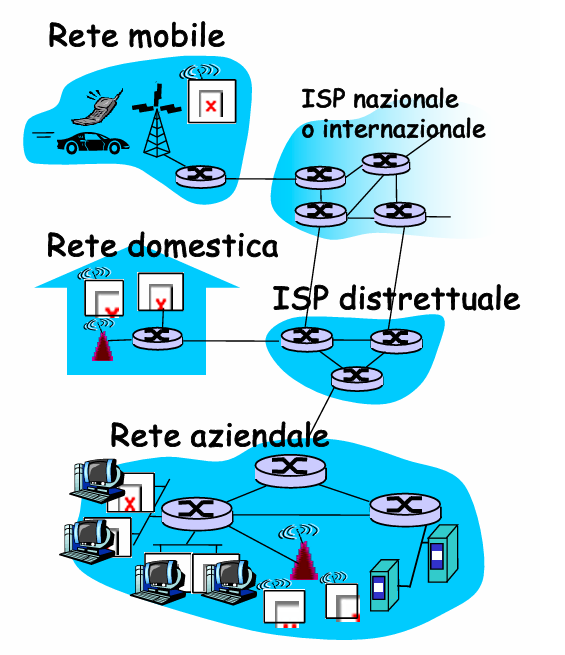
Struttura di rete: confini, sistemi terminali (host), collegamenti, router; accesso punto-punto e tipologie di accesso residenziale (Dial-up, DSL).
I sistemi terminali (host) fanno girare i programmi applicativi (es. Web, e-mail) e sono situati all'estremità di Internet. Le applicazioni che vi girano sopra possono seguire due modelli architetturali:
Domanda fondamentale: come collegare i sistemi terminali ai router esterni? Si distinguono tre tipologie di reti di accesso: reti di accesso residenziale, reti di accesso aziendale (università, istituzioni, aziende), reti di accesso mobile.
Modem dial-up: fino a 56 Kbps di accesso diretto al router; non è possibile "navigare" e telefonare dalla stessa rete.
DSL (Digital Subscriber Line): installazione tramite la rete telefonica esistente; fino a 2,5 Mbps in upstream; fino a 24 Mbps in downstream; linea telefonica dedicata.
Una LAN collega i sistemi terminali di aziende e università all'edge router. Lo standard più diffuso è Ethernet, disponibile a diverse velocità (10 Mb, 100 Mb, 1 Giga, 10 Giga); nella configurazione moderna i sistemi terminali sono collegati mediante uno switch Ethernet.
Una rete condivisa d'accesso wireless collega i sistemi terminali al router attraverso la stazione base, detta anche access point. Si distinguono:
I componenti tipici di una rete domestica sono: modem DSL o via cavo; router/firewall/NAT; rete Ethernet cablata; punto d'accesso wireless per i dispositivi senza fili (es. laptop).
Il nucleo della rete è costituito da una rete magliata di router che interconnettono i sistemi terminali. Il quesito fondamentale è: come vengono trasferiti i dati attraverso la rete? Si distinguono due approcci:
Il flusso di dati punto-punto viene suddiviso in pacchetti: i pacchetti di utenti diversi condividono le risorse di rete e ciascun pacchetto utilizza completamente il canale, secondo le necessità del momento (contesa per le risorse). Quando la richiesta di risorse eccede il quantitativo disponibile si ha congestione: i pacchetti vengono accodati, in attesa di poter utilizzare il collegamento. Con la tecnica store-and-forward, un commutatore deve ricevere l'intero pacchetto prima di poter cominciare a trasmetterlo sul collegamento in uscita.
Quando la frequenza di arrivo dei bit supera per un certo periodo il transmission rate del collegamento in uscita, i pacchetti vengono accodati in attesa di essere trasmessi; se la memoria dei buffer si esaurisce, i pacchetti possono essere eliminati (perdita di pacchetto).
Le risorse punto-punto (ampiezza di banda, capacità del commutatore) vengono riservate per l'intera "chiamata": non c'è condivisione, le prestazioni sono garantite, ma è necessaria una fase di impostazione della chiamata. È la tecnica utilizzata nelle reti telefoniche. Le risorse di rete vengono suddivise in "pezzi" allocati ai vari collegamenti (divisione di frequenza o divisione di tempo); di conseguenza, se non utilizzate, rimangono inattive.
La commutazione di pacchetto consente a più utenti di condividere la rete. Ad esempio, su un collegamento da 1 Mbps, con ciascun utente attivo al 100 kbps per il 10% del tempo: la commutazione di circuito supporta solo 10 utenti, mentre con la commutazione di pacchetto, con 35 utenti, la probabilità di averne più di 10 attivi contemporaneamente è inferiore allo 0,0004.
La commutazione di pacchetto è ottima per i dati "a raffica" (condivisione delle risorse, nessuna impostazione della chiamata necessaria), ma può portare a congestione eccessiva, con ritardo e perdita di pacchetti: sono quindi necessari protocolli per il trasferimento affidabile dei dati e per il controllo della congestione. Resta un problema aperto come ottenere un comportamento "circuit-like" in grado di fornire garanzie di banda per le applicazioni audio/video.
Un nodo si dice non scalabile se all'aumentare delle dimensioni del sistema esso non funziona più. Gli ISP devono stabilire un accordo economico, connettendo ogni ISP di accesso con un ISP globale. Un unico ISP non è realistico: se conveniente economicamente, nascono sottoinsiemi degli ISP consorziati. Gli ISP consorziati devono essere interconnessi tramite gli Internet eXchange Point (IXP). Gli ISP globali non sono presenti in tutte le città: ISP regionali connettono le reti di accesso agli ISP globali.
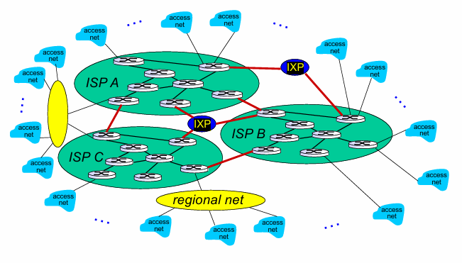
Architettura di rete a livelli (Access ISP, Regional ISP, Tier-1 ISP, IXP) e comportamento di un router.
| Ritardo | Descrizione |
|---|---|
| 1. Elaborazione del nodo | controllo errori bit, determinazione del nodo di uscita; microsecondi o millisecondi |
| 2. Accodamento | attesa di trasmissione, dipende dal livello di congestione del router e dalla natura del traffico in ingresso alla coda; micro o millisecondi |
| 3. Trasmissione (L/R) | L = lunghezza del pacchetto, R = frequenza di trasmissione del collegamento; ritardo store-and-forward; micro o millisecondi |
| 4. Propagazione (d/s) | d = lunghezza del collegamento fisico, s = velocità di propagazione del collegamento; millisecondi per le reti WAN esterne |
L'ampiezza di banda del collegamento influenza il ritardo di trasmissione, mentre il ritardo di propagazione dipende dalla distanza tra i due router e dalla velocità di propagazione.
Siano R la frequenza di trasmissione (bps), L la lunghezza del pacchetto (bit) e a il tasso medio di arrivo dei pacchetti. Si definisce intensità di traffico il rapporto La/R. Poiché il primo e l'ultimo pacchetto hanno ritardi molto diversi, si ricorre a misure statistiche.
Cosa significano effettivamente ritardi e perdite nella "vera" Internet? Il traceroute è un programma diagnostico che fornisce una misura del ritardo end-to-end dalla sorgente al router lungo i percorsi Internet punto-punto verso la destinazione: invia tre pacchetti che raggiungeranno il router i sul percorso verso la destinazione; il router i restituisce i pacchetti al mittente, che calcola l'intervallo tra trasmissione e risposta.
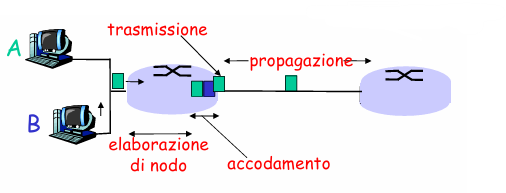
Confronto qualitativo dei ritardi end-to-end al variare di R₁ > R₂ e R₁ < R₂.
Se Rs < Rc il throughput end-to-end è limitato dal collegamento più lento (collo di bottiglia).
Collo di bottiglia: collegamento su un percorso punto-punto che vincola il throughput end-to-end.
min(Rc, Rs, R/10)
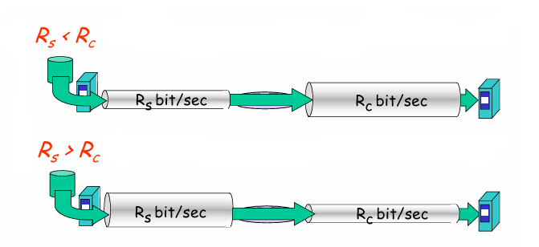
Modello "tubo" del throughput e livelli del modello a 5 livelli con incapsulamento dei dati.
Una struttura "esplicita" consente l'identificazione dei vari componenti di un sistema complesso e delle loro interrelazioni. I 5 livelli del modello di riferimento sono:
Intestazione (header) = informazioni aggiunte (es. lettura in busta, con mittente e destinatario). Il messaggio + intestazione = segmento. Il trasporto chiede alla rete di aggiungere un'intestazione Hn "n=net" e così via fino al livello fisico. All'arrivo, il destinatario toglie tutte le intestazioni e se tutto corrisponde estrae il messaggio e lo passa al livello applicativo.
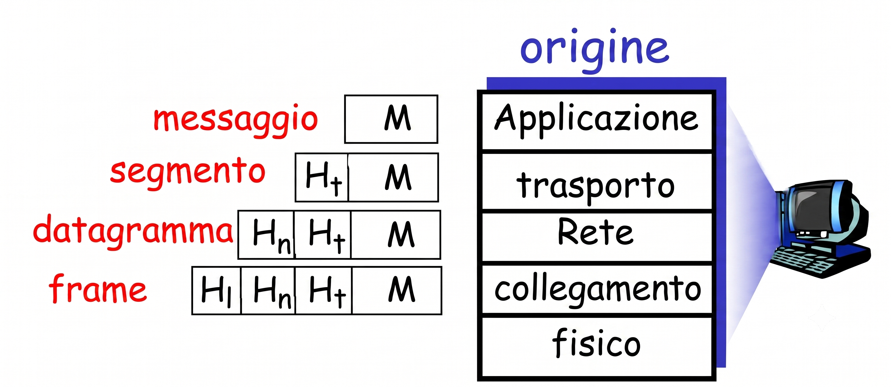
Si vuole trasmettere un messaggio di dimensione 3 MB attraverso la rete a commutazione di pacchetto schematizzata in figura (Host A — R1 — R2 — Host B). I 3 link sono lunghi rispettivamente 100 m, 50 m e 80 m, ed ognuno ha un'ampiezza di banda pari a 512 kbps e velocità di propagazione 2,8×10⁸ m/s. Si calcoli il tempo necessario a trasmettere l'intero messaggio assumendo pacchetti di 536 byte di payload, con overhead di 28 byte.
Nota: per le dimensioni dei file si usano potenze di 2; per i tassi di trasmissione potenze di 10.
Domande aggiuntive: (a) Dopo quanto tempo l'host B riceve interamente il primo pacchetto? (b) Dopo quanto tempo riceve interamente il secondo pacchetto? (c) Tempo totale per l'intero messaggio.
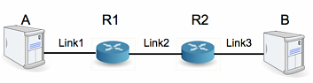
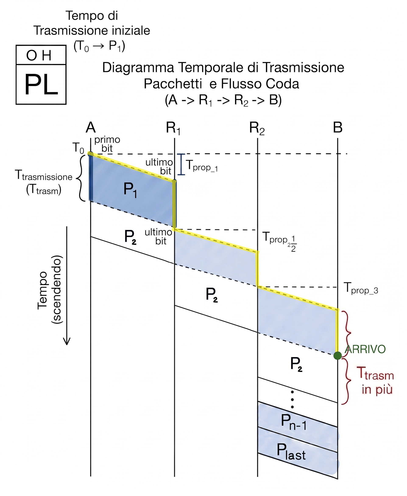
Calcolo dei tempi di propagazione Tprop1,2,3, del tempo di trasmissione TTras, e risposte ai punti a) b) c).
Tprop1 = L1 / Vp = 100m / 2,8·108 m/s = 3,57·10-7 s = 3,57·10-1μs ≈ 0,357 μsSi vuole trasmettere un messaggio di dimensione 2 KB attraverso la stessa topologia. Ogni link è lungo 200 m, 100 m e 160 m, ed ha velocità di propagazione 2,8×10⁸ m/s. I 3 link hanno ampiezza di banda rispettivamente pari a 200 Mbps, 20 Mbps e 2 Gbps. Si assumano pacchetti di 536 byte di payload, con overhead di 28 byte. Si calcolino gli eventuali ritardi di accodamento subiti dai pacchetti lungo il percorso e il tempo necessario a trasmettere l'intero messaggio.
N = ⌈Smess/ PL⌉ = ⌈2KB/536 byte⌉ = ⌈2KB·1026byte/536 byte⌉ = ⌈3,82⌉ ≈ 4 pacchetti (ultimo più piccolo);
Slast = Smess − (N−1)·PL = 2048 − (4-1)·536 = 392 byte
diagramma con accodamento al link più lento (10× più lento); tempi di propagazione Tprop1,2,3.
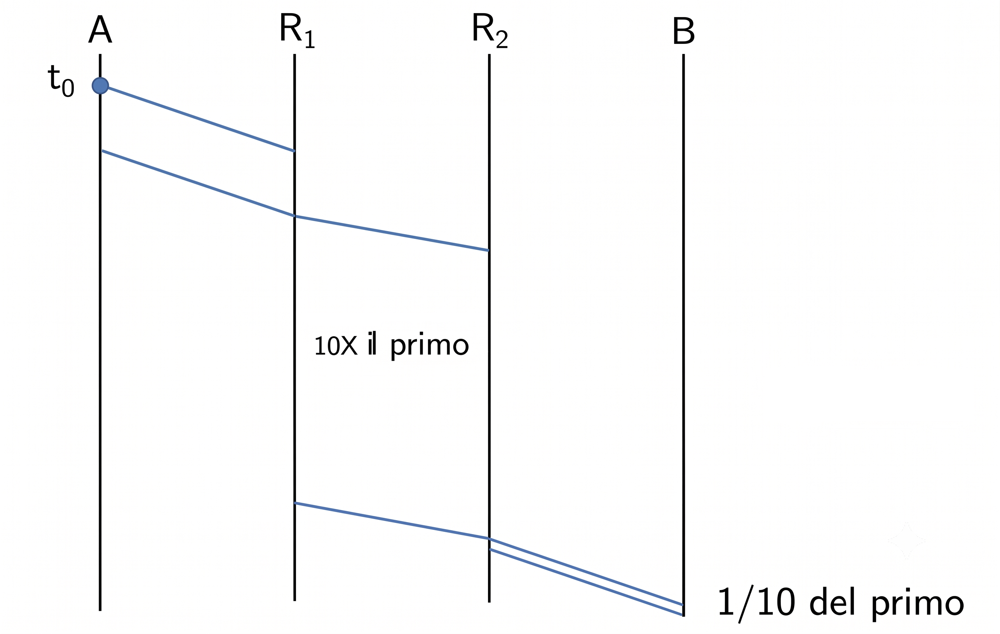
Tprop1 = L1 / Vp = 200m / 2,8·108 m/s = 7,14·10-7 s = 3,57·10-1μs ≈ 0,714 μs
Tprop2 = L2 / Vp = 100m / 2,8·108 m/s = 3,57·10-7 s ≈ 0,357 μs
Tprop3 = L3 / Vp = 160m / 2,8·108 m/s = 5,714·10-7 s ≈ 0,571 μs
Scrivere programmi che girano su sistemi terminali diversi, comunicano attraverso la rete, sono standalone (funzionano senza richiedere software specifico per i dispositivi del nucleo della rete, quali router o commutatori Ethernet). Esempio: il software di un server web comunica con il software del browser.
Stabiliscono l'organizzazione dell'applicazione sui diversi sistemi terminali:
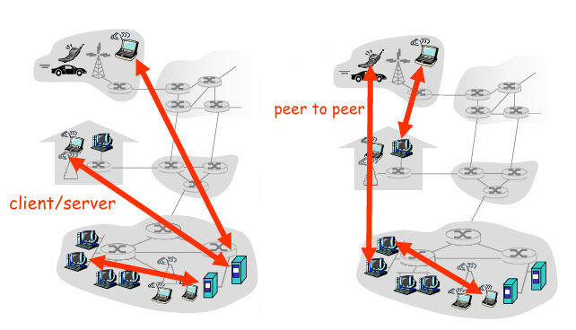
Architettura client-server e P2P; concetto di socket come "porta" tra applicazione e trasporto; processo di indirizzamento tramite indirizzo IP a 32 bit.
Client: entità leggera, comunica con il server in qualche modalità, può avere indirizzo IP non fisso, non comunica con altri client.
Server: deve essere sempre attivo, host sempre attivo, indirizzo IP fisso, spesso uso di server virtuali per scalare.
N.B. Uso intenso dell'infrastruttura: acquisto, installazione, manutenzione, costi di banda.
Non c'è server sempre attivo; coppie arbitrarie di host (peer) comunicano direttamente tra loro; i peer non devono necessariamente essere sempre operativi e controllati dall'ISP; facilmente scalabile, non richiede un'infrastruttura di server significativa, difficile da gestire (sicurezza); il server serve per tracciare, tu sei un repository tramite IP.
Processo: programma in esecuzione su un host. All'interno dello stesso host, due processi comunicano utilizzando sistemi interprocesso (del SO). Processi su host differenti comunicano attraverso lo scambio di messaggi. Il processo che chiede è il client, e chi riceve è il server. Le applicazioni P2P hanno processi client e processi server.
Socket: un processo invia/riceve messaggi da/verso la sua socket, analoga ad una porta tra applicazione e trasporto.
Un host ha un indirizzo IP a 32 bit. Per indirizzare un messaggio non è sufficiente solo l'indirizzo IP: l'indirizzo IP indica i numeri di porta che identificano il processo.
Un protocollo a livello di applicazione definisce:
I protocolli di pubblico dominio sono definiti nelle RFC e consentono l'interoperabilità (es. HTTP, SMTP); esistono anche protocolli proprietari.
| Applicazione | Tolleranza alla perdita di dati | Throughput | Sensibilità al tempo |
|---|---|---|---|
| Trasferimento file | No | Variabile | No |
| Posta elettronica | No | Variabile | No |
| Documenti Web | No | Variabile | No |
| Audio/video in tempo reale | Sì | Audio: 5 Kbps–1 Mbps; Video: 10 Kbps–5 Mbps | Sì, centinaia di ms |
| Audio/video memorizzati | Sì | Come sopra | Sì, pochi secondi |
| Giochi interattivi | Sì | Fino a pochi Kbps | Sì, centinaia di ms |
| Messaggistica istantanea | No | Variabile | Sì e no |
Requisiti del servizio di trasporto di alcune applicazioni comuni.
Servizio di TCP: orientato alla connessione (è richiesto un setup fra i processi client e server, con handshaking di connessione-chiusura); trasporto affidabile fra i processi d'invio e di ricezione (no errori e perdite, garantito l'ordine); controllo di flusso (il mittente non vuole sovraccaricare il destinatario); controllo della congestione ("strozza" il processo d'invio quando la rete è sovraccaricata); non offre temporizzazione, garanzie su un'ampiezza di banda minima, né sicurezza.
Servizio di UDP: trasferimento dati inaffidabile fra i processi d'invio e di ricezione; non offre setup della connessione, affidabilità, controllo di flusso, controllo della congestione, temporizzazione, né ampiezza di banda minima e sicurezza.
D: Perché esiste UDP? Perché, non avendo overhead legato a setup della connessione, affidabilità e controllo di congestione, è più adatto ad applicazioni che tollerano perdite ma sono sensibili al ritardo. La sicurezza può essere aggiunta a un livello superiore, ad esempio tramite Secure Socket Layer (SSL).
| Applicazione | Protocollo a livello applicazione | Protocollo di trasporto sottostante |
|---|---|---|
| Posta elettronica | SMTP [RFC 2821] | TCP |
| Accesso a terminali remoti | Telnet [RFC 854] | TCP |
| Web | HTTP [RFC 2616] | TCP |
| Trasferimento file | FTP [RFC 959] | TCP |
| Multimedia in streaming | HTTP (es. YouTube) | TCP o UDP |
| Telefonia Internet | RTP [RFC 1889] / SIP, RTP, proprietario (es. Skype) | Tipicamente UDP |
Una pagina web è costituita da oggetti: un oggetto può essere un file HTML, un'immagine JPEG, un'applet Java, un file audio, ecc. Una pagina web è formata da un file base HTML che include diversi oggetti referenziati. Ogni oggetto è referenziato da un URL (Uniform Resource Locator), ad esempio www.someschool.edu/someDept/pic.gif, dove www.someschool.edu è il nome dell'host e /someDept/pic.gif è il nome del percorso.
HTTP (HyperText Transfer Protocol) è il protocollo a livello di applicazione del Web e segue il modello client/server: il client è il browser che richiede, riceve e "visualizza" gli oggetti del Web; il server è il server web che invia gli oggetti in risposta a una richiesta.
HTTP usa TCP: il client inizializza la connessione TCP (crea una socket) con il server sulla porta 80; il server accetta la connessione TCP dal client; i messaggi HTTP vengono scambiati fra browser (client HTTP) e server web (server HTTP); infine la connessione TCP viene chiusa.
Connessioni non persistenti: solo un oggetto viene trasmesso su una connessione TCP; per richiedere più oggetti è necessario aprire più connessioni.
Connessioni persistenti: più oggetti possono essere trasmessi su una singola connessione TCP tra client e server.
Supponiamo che l'utente immetta l'URL www.someSchool.edu/someDepartment/home.index (la pagina contiene testo e riferimenti a 10 immagini jpeg):
www.someSchool.edu sulla porta 80.someDepartment/home.index.Il tempo di risposta totale è dato da: un RTT per inizializzare la connessione TCP (handshake a tre vie); un RTT perché ritornino la richiesta HTTP e i primi byte della risposta HTTP; più il tempo di trasmissione del file.
N.B. Il RTT include i ritardi di propagazione, di accodamento e di elaborazione.
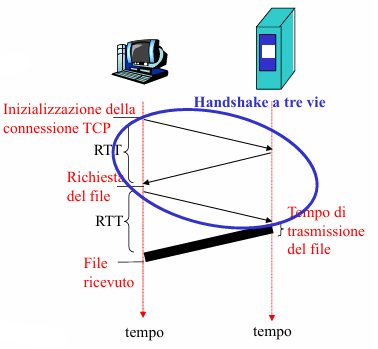
Gli svantaggi delle connessioni non persistenti sono: richiedono 2 RTT per oggetto; comportano overhead del sistema operativo per ogni connessione TCP (lato server); i browser spesso aprono connessioni TCP parallele per caricare gli oggetti referenziati.
Con le connessioni persistenti, invece: il server lascia la connessione TCP aperta dopo l'invio di una risposta; i successivi messaggi tra gli stessi client/server vengono trasmessi sulla connessione già aperta; il client invia le richieste non appena incontra un oggetto referenziato, con un solo RTT per tutti gli oggetti referenziati; è possibile inviare le richieste back-to-back (pipelining); la connessione viene chiusa quando rimane inattiva oltre un timeout.
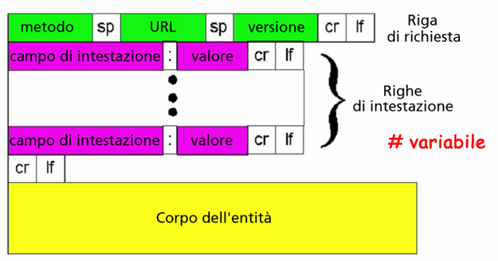
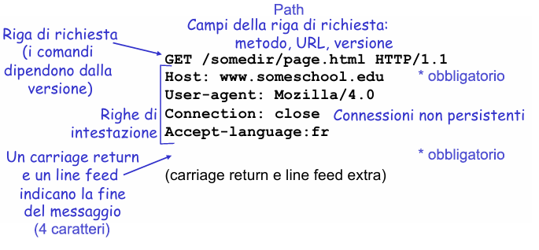
Riga di richiesta (metodo/URL/versione), righe di intestazione, corpo dell'entità; metodi GET/POST/HEAD; differenze HTTP/1.0 e HTTP/1.1.
Metodo: GET (dominio); URL: solo il percorso; Versione del protocollo.
Connection: close → connessioni persistenti o non persistenti (open/close). HTTP/1.0 = close (non persistente); HTTP/1.1 = persistente.
| HTTP/1.0 | HTTP/1.1 |
|---|---|
| GET | GET, POST, HEAD |
| POST | PUT — include il file nel corpo dell'entità e lo invia al percorso specificato nel corpo URL |
| HEAD — chiede al server di escludere l'oggetto richiesto dalla risposta | DELETE |
Metodo POST: la pagina web spesso include un form per l'input dell'utente; l'input arriva al server nel corpo dell'entità; si tratta sempre di una richiesta, ma a seconda dell'input.
Corpo URL: usa il metodo GET; l'input arriva al server nel campo URL della riga di richiesta.
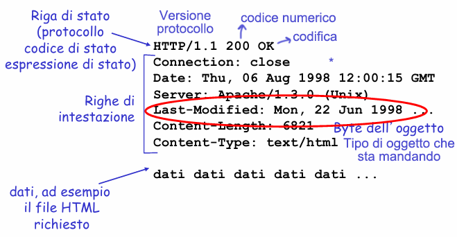
Riga di risposta (stato, versione,codice nuemrico, codifica), righe di intestazione
Compaiono nella prima riga del messaggio di risposta server→client. Alcuni codici di stato e le relative espressioni:
| Codice | Significato |
|---|---|
| 200 OK | la richiesta ha avuto successo; l'oggetto richiesto viene inviato nella risposta |
| 301 Moved Permanently | l'oggetto richiesto è stato trasferito; la nuova posizione è specificata nell'intestazione Location: della risposta |
| 400 Bad Request | il messaggio di richiesta non è stato compreso dal server |
| 404 Not Found | il documento richiesto non si trova su questo server |
| 505 HTTP Version Not Supported | il server non ha la versione di protocollo HTTP richiesta |
HTTP/2 nasce per superare i limiti di prestazioni di HTTP/1.1 (es. richieste bloccanti in sequenza); introduce tecniche come la suddivisione dei messaggi in frame, l'invio parallelo di più richieste/risposte su un'unica connessione TCP (multiplexing) e la possibilità per il server di assegnare priorità ai frame nelle connessioni con i singoli client.
HTTP/3 si basa sul protocollo di trasporto QUIC, che integra le funzionalità di controllo di congestione, affidabilità e sicurezza (cifratura) tipiche di TCP + TLS ma a livello applicativo e sopra UDP, eliminando il problema dell'head-of-line blocking a livello di trasporto: la perdita di un pacchetto relativo a un singolo oggetto non blocca più la consegna degli altri oggetti multiplexati sulla stessa connessione.
Il cookie è un artificio tecnico per ricordare delle interazioni dell'utente al server e di conseguenza serve a fornire all'utente nuove personalizzate. I cookie sono degli identificatori anonimi spesso casuali che il server attribuisce all'utente client nella prima interazione che hanno, sarà l'utente nelle interazioni successive a usare l'identificativo anonimo per dire "sono io".
Per far funzionare questo meccanismo, il server deve salvare gli identificativi generati all'interno di un proprio database, associandoli allo stato dell'utente. Allo stesso tempo, anche il client deve memorizzare l'identificativo che gli è stato assegnato. N.B. Nella primissima richiesta HTTP verso il server, il client non invia alcun cookie, poiché non gli è ancora stato rilasciato.
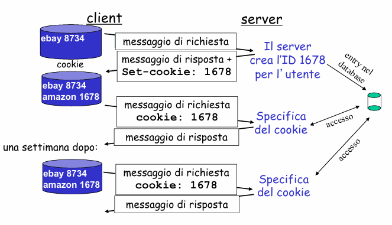
Scambio Set-Cookie / Cookie tra client e server in richieste successive; il server consulta il database per specifiche del cookie.
Cosa possono contenere i cookie: autorizzazione, stato della sessione dell'utente (al di sopra dell'HTTP), …
Cookie e privacy: i cookie permettono ai siti di imparare molte cose su di noi; l'utente può fornire al sito il nome e l'indirizzo e-mail.
Lo Stato: mantengono lo stato del mittente e del ricevente per più transazioni. I messaggi HTTP trasportano lo stato.
Obiettivo: soddisfare la richiesta del client senza coinvolgere il server d'origine. L'utente configura il browser affinché acceda al Web tramite la cache: il browser trasmette tutte le richieste HTTP alla cache; se l'oggetto è nella cache, la cache lo fornisce direttamente, altrimenti la cache richiede l'oggetto al server d'origine e poi lo inoltra al client. La cache opera quindi sia come client (verso il server d'origine) sia come server (verso il client). Tipicamente la cache è installata da un ISP (università, aziende o ISP residenziali).
Perché il caching web? Riduce i tempi di risposta alle richieste dei client (es. il collo di bottiglia tra client e server è tipicamente maggiore di quello tra client e cache); riduce il traffico sul collegamento di accesso a Internet; una rete arricchita di cache consente ai provider "scadenti" di fornire comunque dati con efficacia.
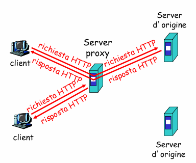
Ipotesi: dimensione media di un oggetto = 1 Mbit; frequenza media di richieste dai browser istituzionali ai server d'origine = 15/sec; ritardo dal router lato Internet a qualsiasi server d'origine e ritorno al router = 2 sec (ritardo Internet); collegamento d'accesso a 15 Mbps; LAN istituzionale a 100 Mbps.
Situazione iniziale: utilizzazione sulla LAN = (15 req/sec)·(1 Mbit/req) / 100 Mbps = 15%; utilizzazione sul collegamento d'accesso = 100% (saturo); ritardo totale = ritardo di Internet + ritardo di accesso + ritardo della LAN = 2 sec + minuti + millisecondi (il collegamento d'accesso saturo domina il ritardo).
Soluzione 1 — aumentare l'ampiezza di banda del collegamento d'accesso (es. a 100 Mbps): utilizzo sulla LAN = 15%; utilizzo sul collegamento d'accesso = 15%; ritardo totale = 2 sec + msec + msec. Conseguenza: l'aggiornamento è spesso molto costoso.
Soluzione 2 — installare una cache istituzionale, supponendo un hit rate di 0,4 (tipicamente tra 0,2 e 0,7): il 40% delle richieste è soddisfatto quasi immediatamente, il 60% è soddisfatto dal server d'origine; l'utilizzazione del collegamento d'accesso si riduce al 60%, con ritardi trascurabili (circa 10 msec).
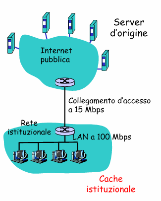
Data la configurazione indicata in figura si supponga che l'host1 richieda al web server remoto tramite protocollo HTTP/1.1 una pagina web di dimensione 3 kB contenente al suo interno una immagine di 1.5 MB. Successivamente anche l'host2 richiede la stessa pagina. Supponendo che entrambi gli host siano configurati per utilizzare il proxy e che la pagina sia statica, si calcolino i tempi per entrambe le trasmissioni. Si assuma che il RTT tra due host della LAN sia pari in media a 10 μs, che il link L sia lungo 500 m e abbia velocità di propagazione 2,8×10⁸ m/s e che le ampiezze di banda per la LAN e per il link L siano di 100 Mbps. Si assuma inoltre una MTU pari a 1500 byte e un overhead complessivo di pacchetto pari a 48 byte e si considerino i canali privi di errori o perdite.
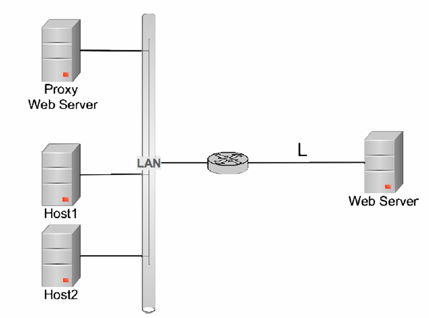
Dati e calcoli preliminari:
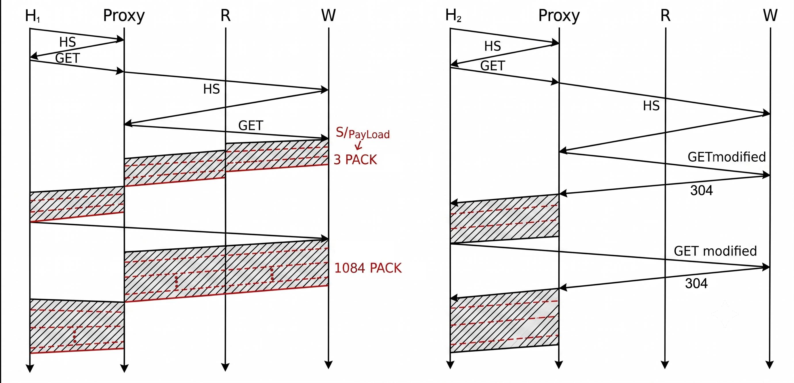
Obiettivo: non inviare un oggetto se la cache ne possiede già una copia aggiornata. La cache specifica nella richiesta HTTP la data della copia dell'oggetto in suo possesso, tramite l'intestazione If-modified-since: <data>. Il server risponde senza includere l'oggetto se la copia nella cache è ancora aggiornata (HTTP/1.0 304 Not Modified); se invece l'oggetto è stato modificato, il server invia la risposta completa (HTTP/1.0 200 OK con i dati).
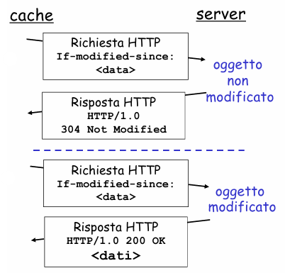
Le due tracce seguenti richiedono i concetti di cache del client, GET condizionale e cookie appena introdotti, e vengono quindi proposte a questo punto della trattazione.
Un host, direttamente connesso ad un server tramite un canale privo di errori o perdite, richiede una
pagina web statica, di dimensione 3 kB, contenente due immagini di dimensioni 50 kB e 80 kB
rispettivamente. Nell’ipotesi che, subito dopo avere ricevuto i file richiesti, l’utente inoltri una seconda
richiesta per la stessa pagina, e che il client web implementi una cache del web, qual è il tempo totale
per lo scambio di file?
Si supponga che il protocollo utilizzato sia HTTP/1.1; si assuma inoltre che il canale abbia RTT = 1
ms, ampiezza di banda pari a 10 Mbps ed MTU = 1500 byte e che l’overhead complessivo di pacchetto
sia pari a 48 byte.
Note:
Per le dimensioni relative ai file si considerino le grandezze come potenze di 2 e quindi in particolare:
1 MB = 1.024 kB; 1 kB = 1.024 byte
Per le dimensioni relative ai tassi di trasmissione e alle ampiezze di banda si considerino le grandezze
come potenze di 10 e quindi in particolare:
1 kbps = 1.000 bps; 1 Mbps = 1.000.000 bps
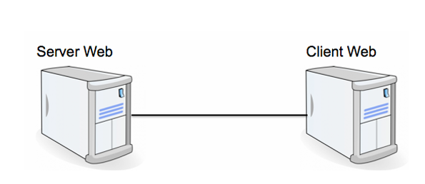
Prima richiesta della pagina (oggetti non ancora in cache)
Scambio di messaggi (connessione persistente, HTTP/1.1): il client apre la connessione (handshake TCP, 1 RTT), richiede /index.html e riceve il file base — FB (200 OK); non appena ricevuto, invia in pipeline le due richieste per img1 (50 kB) e img2 (80 kB), che il server serve in sequenza sulla stessa connessione; infine la connessione viene chiusa.
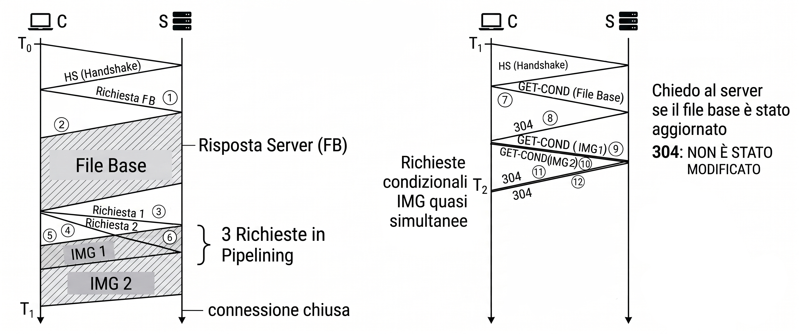
① Richiesta del file base
GET /index.html HTTP/1.1
Host: unipa.it
Connection: open② Risposta con il file base
HTTP/1.1 200 OK
Connection: open
Content-Type: text/html
Content-Length: 3072
Last-Modified: X
(VUOTO)conversione: (3kB in Byte: 3 * 1024 = 3072 Byte)
③ Richiesta immagine 1
GET /topo.png HTTP/1.1
Host: unipa.it
Connection: open④ Risposta con immagine 1
HTTP/1.1 200 OK
Connection: open
Content-Type: image/png
Content-Length: 51200
Last-Modified: Y
(DATI)(50 kB = 50·1024 = 51200 B)
⑤ Richiesta immagine 2 (in pipeline con la ③, stesso schema)
GET /img2.png HTTP/1.1
Host: unipa.it
Connection: open⑥ Risposta con immagine 2 (al termine la connessione viene chiusa)
HTTP/1.1 200 OK
Connection: open
Content-Type: image/png
Content-Length: 81920
Last-Modified: Z
(DATI)(80 kB = 80·1024 = 81920 B)
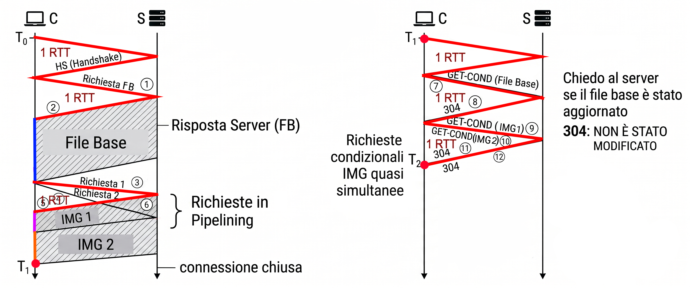
RTT = 2·Tprop (tempo di andata e ritorno). Il tempo totale della prima richiesta è quindi:
T1 = (Tprop+Tprop)handshake + (Tprop+Tprop)rich./risp. ①② + Ttrasm(FB) + (Tprop+Tprop)rich. pipeline ③⑤ + Ttrasm(IMG1) + Ttrasm(IMG2)
T1 = 3·RTT + Ttrasm(FB) + Ttrasm(IMG1) + Ttrasm(IMG2)
Calcolo dei tempi di trasmissione
Payload = MTU − overhead = 1500 − 48 = 1452 B
File base — FB (3 kB = 3.072 B)
NFB = ⌈3072/1452⌉ = ⌈2,12⌉ = 3 pacchetti
Datitrasm(FB) = 3072 + (3·48) = 3216 B
Ttrasm(FB) = 3216·8/107 bps = 2,573·10-3 s ≈ 2,57 ms
Immagine 1 (50 kB = 51.200 B)
NIMG1 = ⌈51200/1452⌉ = ⌈35,26⌉ = 36 pacchetti
Datitrasm(IMG1) = 51200 + (36·48) = 52.928 B
Ttrasm(IMG1) = 52928·8/107 bps = 4,234·10-3 s ≈ 4,23 ms
Immagine 2 (80 kB = 81.920 B)
NIMG2 = ⌈81920/1452⌉ = ⌈56,42⌉ = 57 pacchetti
Datitrasm(IMG2) = 81920 + (57·48) = 84.656 B
Ttrasm(IMG2) = 84656·8/107 bps = 6,772·10-3 s ≈ 6,77 ms
T1 = 3·(1 ms) + 2,57 ms + 4,23 ms + 6,77 ms ≈ 16,58 ms
Seconda richiesta della pagina (con cache del client, GET condizionali quasi simultanee/in pipeline)
⑦ Richiesta condizionale del file base
GET /index.html HTTP/1.1
Host: unipa.it
Connection: open
If-Modified-Since: X⑧ Risposta: file non modificato
HTTP/1.1 304 Not Modified
Connection: open⑨ Richiesta condizionale immagine 1
GET /topo.png HTTP/1.1
Host: unipa.it
Connection: open
If-Modified-Since: Y⑩ Risposta: immagine non modificata
HTTP/1.1 304 Not Modified
Connection: open⑪ Richiesta condizionale immagine 2 (in pipeline con la ⑨)
GET /img2.png HTTP/1.1
Host: unipa.it
Connection: open
If-Modified-Since: Z⑫ Risposta: immagine non modificata
HTTP/1.1 304 Not Modified
Connection: openIl client apre una nuova connessione (1 RTT di handshake ⑦-⑧... ), invia la GET condizionale (If-Modified-Since) per il file base ottenendo 304 Not Modified (1 RTT), quindi, quasi simultaneamente/in pipeline, le GET condizionali per le due immagini, ottenendo per entrambe 304 Not Modified (1 RTT complessivo). Le risposte 304 non trasportano il corpo del file, quindi il loro tempo di trasmissione è trascurabile.
T1→2 = 3·RTT = 3·1 ms = 3 ms
Tempo totale per lo scambio di file
Ttot = T1 + T1→2 ≈ 16,58 ms + 3 ms ≈ 19,58 ms
Riepilogo dei risultati
| Grandezza | Valore |
|---|---|
| Payload | 1452 B |
| NFB / Datitrasm(FB) / Ttrasm(FB) | 3 pacchetti / 3216 B / 2,57 ms |
| NIMG1 / Datitrasm(IMG1) / Ttrasm(IMG1) | 36 pacchetti / 52.928 B / 4,23 ms |
| NIMG2 / Datitrasm(IMG2) / Ttrasm(IMG2) | 57 pacchetti / 84.656 B / 6,77 ms |
| T1 (prima richiesta) | ≈ 16,58 ms |
| T1→2 (seconda richiesta, con cache) | 3 ms |
| Ttot | ≈ 19,58 ms |
Data la configurazione schematizzata in figura, si assuma che l'host H richieda una pagina web al server www.ebay.com, costituita da un file HTML di 12 kB e dall'immagine www.foo.it/pics/img1.jpg di 4 MB, e che, successivamente, lo stesso host richieda una pagina web al server www.amazon.it, costituita da un file HTML di 10 kB e dall'immagine www.foo.it/pics/img2.jpg di 3 MB.
Assumendo che tutte le interazioni avvengano con HTTP/1.1 e che il server www.foo.it utilizzi cookie di 100 byte, si calcoli il tempo totale necessario ad ottenere le due pagine.
Si considerino tutti i collegamenti caratterizzati da ampiezza di banda di 200 Mbps, tempo di propagazione medio pari a 0,1 ms, MTU pari a 1500 byte e overhead di 40 byte.
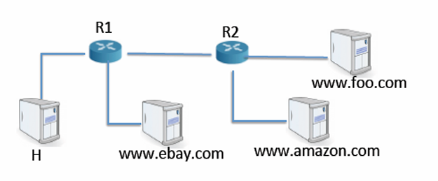
Topologia: H — R1 — www.ebay.com, con R2 e www.amazon.com a valle di R1; il server www.foo.it, che ospita le immagini, è raggiungibile da H attraverso R1 e R2 (non è collocato sugli stessi host di ebay/amazon), quindi le immagini vanno recuperate con richieste separate verso www.foo.it. Il tempo di attraversamento dei router R1/R2 è considerato trascurabile; le risposte contenenti il file base e le immagini vengono frammentate su più pacchetti (in base a MTU e overhead) per il loro invio.
Payload = MTU − overhead = 1500 − 40 = 1460 B
Per il funzionamento e la struttura dell'header Set-Cookie/Cookie si veda il paragrafo "Cookie" trattato in precedenza in questa dispensa; qui ci si limita a considerarne il peso (100 B) nel calcolo dei dati trasmessi.
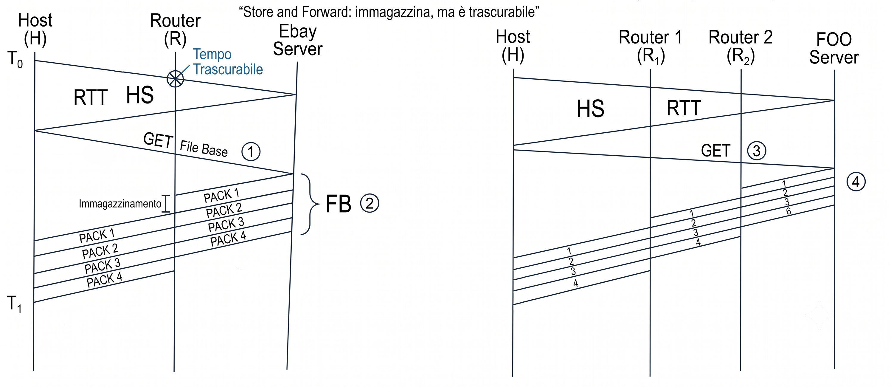
① Richiesta del file base a www.ebay.com
GET /index.html HTTP/1.1
Host: www.ebay.com
Connection: open② Risposta con il file base (FB), frammentata su più pacchetti
HTTP/1.1 200 OK
Connection: open
Content-Type: text/html
Content-Length: 12288(12 kB = 12·1024 = 12288 B; il file base referenzia l'immagine www.foo.it/pics/img1.jpg)
③ Richiesta dell'immagine a www.foo.it (attraverso R1 e R2)
GET /pics/img1.jpg HTTP/1.1
Host: www.foo.it
Connection: open④ Risposta con l'immagine, frammentata su più pacchetti, con cookie impostato dal server
HTTP/1.1 200 OK
Connection: open
Content-Type: image/jpg
Content-Length: 4194304
Set-Cookie: X12IMG1 = 4 MB = 4·1024·1024 = 4.194.304 B; cookie = 100 B
Peso del messaggio con cookie
Size(msgIMG1) = Size(IMG1) + Size(cookie) = 4.194.304 + 100 = 4.194.404 B
N(msgIMG1) = ⌈Size(msgIMG1)/Payload⌉
Nota: nel materiale originale i calcoli si interrompono a questo punto, prima di arrivare al tempo totale; la seconda pagina (richiesta analoga verso www.amazon.it, con file HTML da 10 kB e immagine img2.jpg da 3 MB su www.foo.it) segue lo stesso schema di messaggi ①-④ appena mostrato. Lo schema di risoluzione completo (payload, numero di pacchetti, dati trasmessi comprensivi di overhead e cookie, tempo di trasmissione per ciascun oggetto, sommato ai vari RTT di propagazione lungo i collegamenti H–R1–ebay e H–R1–R2–foo.it) è comunque lo stesso applicato nell'Esercizio 1.
Un client visita per la prima volta la pagina web zappe.it/index.html. Questa pagina contiene al suo interno un'immagine ospitata su un server di terze parti, foo.it/img1.png. Dopo una settimana, lo stesso utente visita un sito di scarpe, scarpe.it/index.html, all'interno del quale è presente un banner ospitato sempre dal server di tracciamento foo.it/banners.gif.
Descrivere lo scambio di messaggi HTTP tra client e server, illustrando come il server foo.it utilizzi i cookie per tracciare l'utente attraverso siti differenti e fornire contenuti personalizzati.
Svolgimento e Analisi dei Messaggi HTTP
Il protocollo HTTP è intrinsecamente senza stato (stateless). I cookie rappresentano un artificio tecnico che permette al server di ricordare le interazioni passate dell'utente. Tramite questo meccanismo, il server attribuisce un identificativo anonimo al client durante la prima interazione, e il client lo riutilizzerà in seguito per farsi riconoscere. Affinché funzioni, il server deve possedere un database dove salvare tutti gli identificativi assegnati.
foo.it, il client non invia alcun cookie poiché non gli è stato ancora assegnato.zappe.it, che risponde con il file HTML (200 OK) contenente il riferimento all'oggetto img1.png ospitato su foo.it.foo.it:
GET /img1.png HTTP/1.1
Host: foo.it
Connection: openfoo.it riceve la richiesta, genera un nuovo identificativo (ad esempio 1518), lo memorizza all'interno di un proprio database associandolo al profilo dell'utente e invia la risposta includendo l'header Set-Cookie:
HTTP/1.1 200 OK
Connection: open
Content-Length: 5786
Content-Type: image/png
Set-Cookie: 1518scarpe.it/index.html a distanza di una settimana.foo.it all'interno della pagina, questa volta per il file banners.gif.foo.it (che funge da cookie di terza parte per il tracciamento incrociato), lo include automaticamente nella nuova richiesta HTTP verso quel dominio:
GET /banners.gif HTTP/1.1
Host: foo.it
Connection: open
Cookie: 1518foo.it legge l'header Cookie: 1518 e consulta il proprio database per risalire allo storico della sessione dell'utente, sapendo che aveva già visitato zappe.it in precedenza.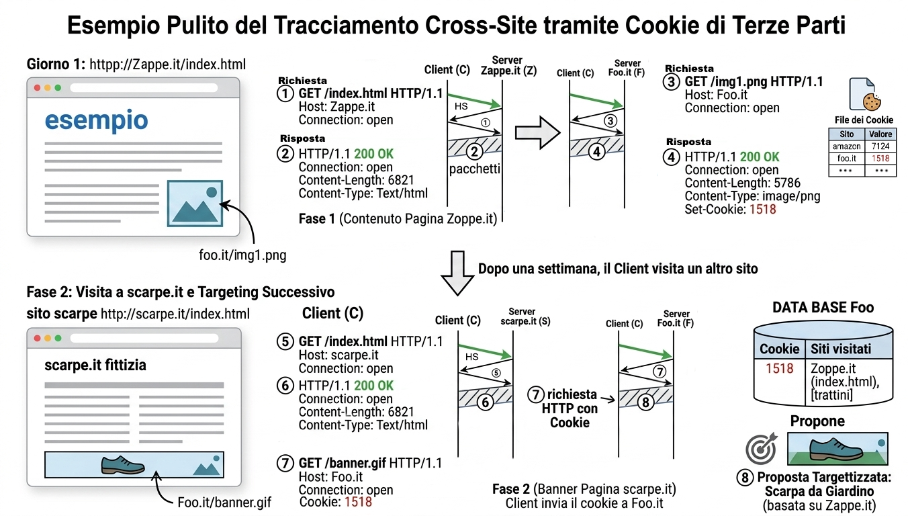
Agente utente: client. Mittente e destinatario non interagiscono direttamente tra loro, ma tramite server.
Protocollo SMTP invia un'email di posta elettronica; quando questo avviene tra server si ha sempre un client e un server.
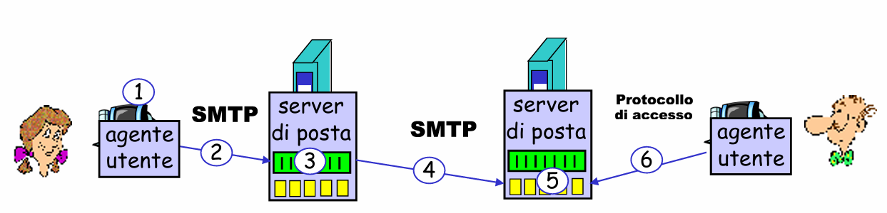
L'agente utente non sempre sa se l'accesso o sempre disponibile; il client non sa l'indirizzo IP e non tutti lo conoscono. Alice manda il messaggio prima al proprio server per coalizzare i server di destinazione in caso di malfunzionamento, e in caso rimandare di nuovo il messaggio.
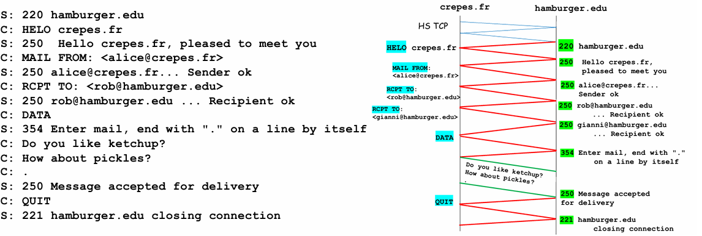
Esempio di handshake SMTP (HELO, MAIL FROM, RCPT TO, DATA, QUIT) tra crepes.fr e hamburger.edu, con diagramma temporale dei livelli TCP/applicativo.
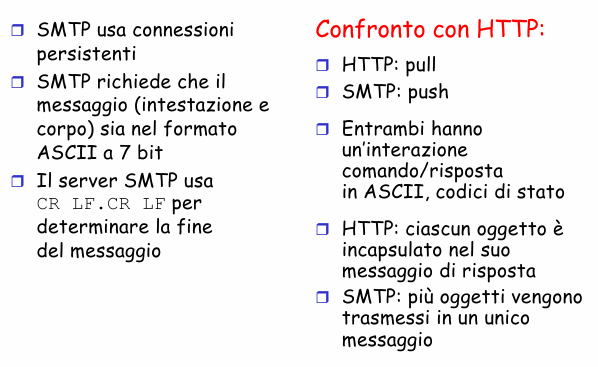
Diagramma completo SMTP; confronto HTTP (pull) vs SMTP (push); formato dei messaggi di posta (intestazione To/From/Subject + corpo); protocollo POP3 con fasi di autorizzazione e transazione.
SMTP usa connessioni persistenti. Se ci sono due destinatari sullo stesso server si manda due comandi RCPT TO.
| HTTP | SMTP |
|---|---|
| Pull | Push |
| Ciascun oggetto è incapsulato nel suo messaggio di risposta | Più oggetti vengono trasmessi in un unico messaggio |
Intestazione: To/A, From/Da, Subject/Oggetto — diversa dai comandi SMTP! Corpo: il "messaggio", sola caratteri ASCII.
POP3 (Post Office Protocol), prevede 2 fasi:
user (dichiara il nome dell'utente), pass (password); risposte del server +OK / -ERRlist (elenco numeri dei messaggi), retr (ottiene i messaggi in base al numero), dele (cancella), quitScarica e cancella, mentre se lasciate si usa scarica e mantieni.
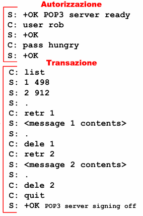
Lo scaricamento con cancellazione di POP3 è scomodo per un utente che si sposta tra diversi client (non lascia copia dei messaggi sui vari client). Lo scaricamento con mantenimento copia i messaggi su più client, ma POP3 è un protocollo senza stato tra una sessione e l'altra.
IMAP (Internet Mail Access Protocol) mantiene invece tutti i messaggi in un unico posto, ovvero sul server; permette all'utente di organizzare i messaggi in cartelle sul server stesso, e mantiene lo stato utente tra le varie sessioni: nomi delle cartelle e associazioni tra ID dei messaggi e nomi delle cartelle.
Data la configurazione indicata in figura, si supponga che l'utente marco.rossi@unipa.it spedisca una email contenente un testo di 4 KB e un allegato di 100KB agli utenti piero.neri@unipa.it e carlo.verdi@gmail.com. Si calcoli il tempo necessario alla trasmissione della email fino alla ricezione, assumendo che non vi siano tempi morti tra le due fasi e che i destinatari utilizzino entrambi il protocollo POP3. Si assuma che la LAN-UNIPA e tutti i link siano caratterizzati dalle seguenti caratteristiche: un'ampiezza di banda pari a 100 Mbps, un tempo medio di propagazione pari a 1 ms, MTU 1500 byte e che l'overhead complessivo di pacchetto sia pari a 48 byte.
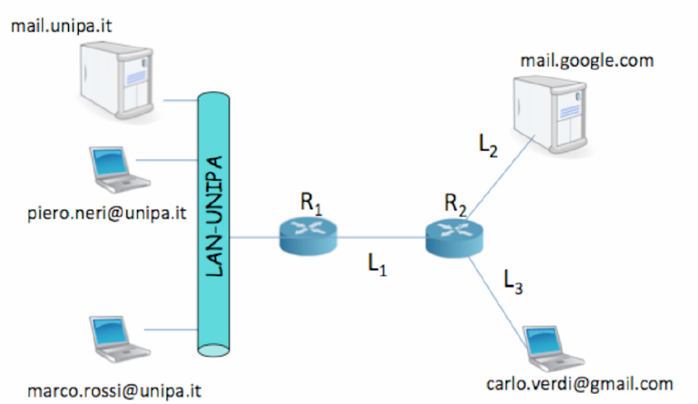
Dati e calcoli preliminari:
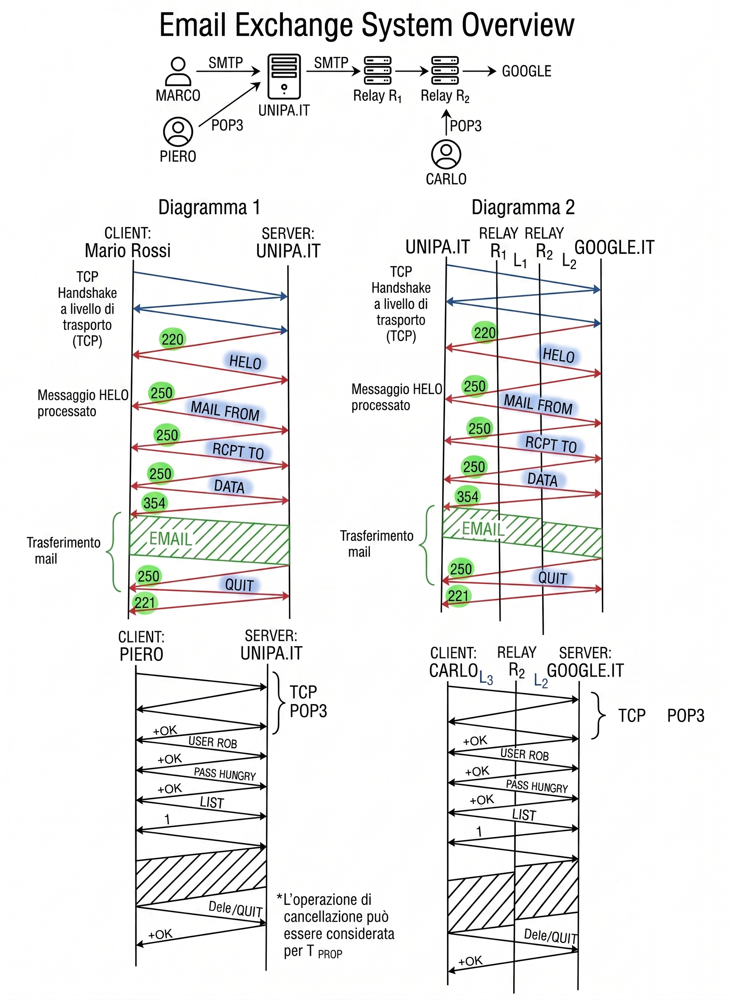
Un'applicazione usata da altre applicazioni. Si usa per molti identificativi: nome, codice fiscale, numero della carta d'identità.
Host e indirizzi di internet: indirizzi IP (32 bit) — usato per indirizzare i datagrammi; "nome" come www.yahoo.com — usato dagli esseri umani.
Come associamo indirizzi IP e nome per facilitare l'utenza umana e non per forzare ricordare gli indirizzi IP? Attraverso il DNS, che:
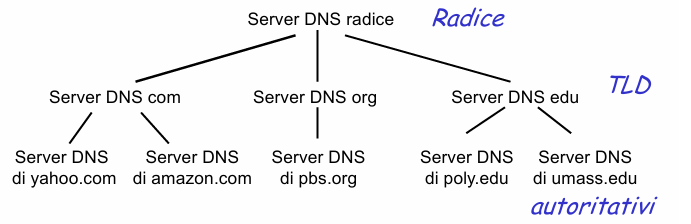
Servizi DNS: traduzione hostname → IP, alias, mail server discovery; database distribuito gerarchico (Root, TLD, Autoritativi); risoluzione iterativa per www.amazon.com.
www.unipa.it, unipa.it, portale.unipa.itNome canonico → server web/posta elettronica con indirizzi IP specifici; Alias e-mail.
Bilanciamento del carico, server web replicati: insieme di indirizzi IP per un nome canonico; il client distribuisce le richieste nelle varie macchine con lo stesso nome canonico ma indirizzi IP diversi.
Database distribuito e gerarchico: Server DNS radice → Server DNS com / org / edu (TLD = Top-Level Domain) → Server DNS autoritativi (3 livelli).
Auto-relativi: il client vuole l'IP di www.amazon.com; il client interroga il server radice per trovare il server DNS com; il client interroga il server DNS com per ottenere l'indirizzo IP di www.amazon.com.
Si consideri una rete in cui l'host H deve scaricare una Pagina Web (file base) di 300 KB situata sul server s1.foo.it e una successiva Immagine di 1 MB situata sul server s2.foo.it. La rete è caratterizzata da una larghezza di banda R di 100 Mbps, una MTU di 1500 B e un overhead trascurabile. Prima dello scaricamento dei file tramite protocollo HTTP, l'host deve effettuare la risoluzione dei nomi a dominio tramite protocollo DNS. Si calcolino i tempi necessari per ottenere il file base e l'immagine, considerando che per la seconda richiesta il DNS locale utilizza i dati in cache per contattare direttamente il DNS Autorevole.
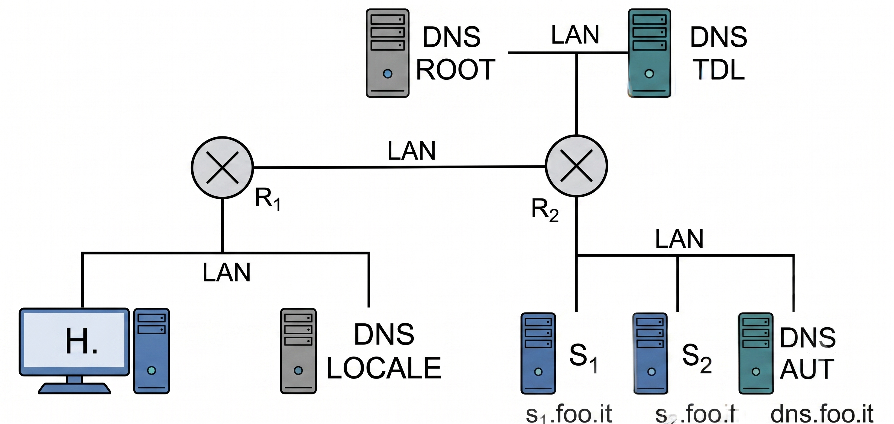
Dati preliminari:
Pagina Web (s1.foo.it/index.htm) = 300 KB
Immagine (s2.foo.it/pics/img.jpg) = 1 MB
Banda (R) = 100 Mbps, MTU = 1500 B, Overhead = 0 B
FASE 1: Risoluzione DNS e scaricamento Pagina Web (s1.foo.it)
H.->DNS LOCALE->DNS ROOT->DNS LOCALE->DNS TDL->DNS LOCALE->DNS AUT->DNS LOCALE->H.->S1
L'Host H non conosce l'IP di s1.foo.it. Il DNS Locale interroga iterativamente la gerarchia DNS. Di seguito la tabella dettagliata dei messaggi scambiati:
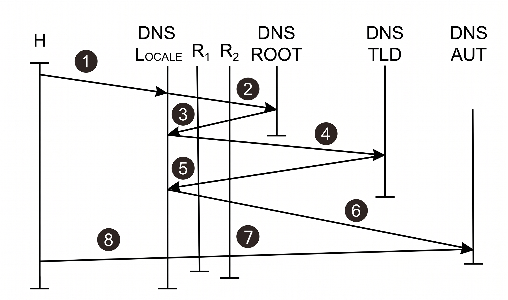
| # | Name | Value | Type | TTL | Azione (Flusso) |
|---|---|---|---|---|---|
| 1 | s1.foo.it | / | A | X | Richiesta (H. richiede l'indirizzo IP del server di s1.foo.it al DNS Locale) |
| 2 | .it | / | NS | X | Richiesta (DNS Locale chiede l'indirizzo IP del DNS TLD a DNS Root) |
| 3 | .it tld.it |
tld.it 192.32.1.1 |
NS A |
X X |
Risposta (il ROOT fornisce il NS e l'IP del TLD) |
| 4 | foo.it | / | NS | X | Richiesta (Il DNS Locale chiede l'indirizzo IP del DNS AUT al Server TLD) |
| 5 | foo.it dns.foo.it |
dns.foo.it 192.32.4.1 |
NS A |
X X |
Risposta (Il TLD fornisce il NS e l'IP dell'AUT) |
| 6 | s1.foo.it | / | A | X | Richiesta (Il DNS Locale chide l'indirizzo IP del Server a l'Autorevole) |
| 7 | s1.foo.it | 197.198.37.1 | A | X | Risposta (l'Autorevole restituisce l'IP finale) |
| 8 | s1.foo.it | 197.198.37.1 | A | X | Risposta finale (Il DNS Locale inoltra l'IP all'Host H) |
Trasmissione HTTP (File Base):
L'Host H invia la richiesta HTTP GET al server S1:
GET /index.html HTTP/1.1 Host: s1.foo.it
Il server S1 risponde (File Base, 300 KB):
HTTP/1.1 200 OK Content-Type: text/html Content-Length: 300 KB Connection: open
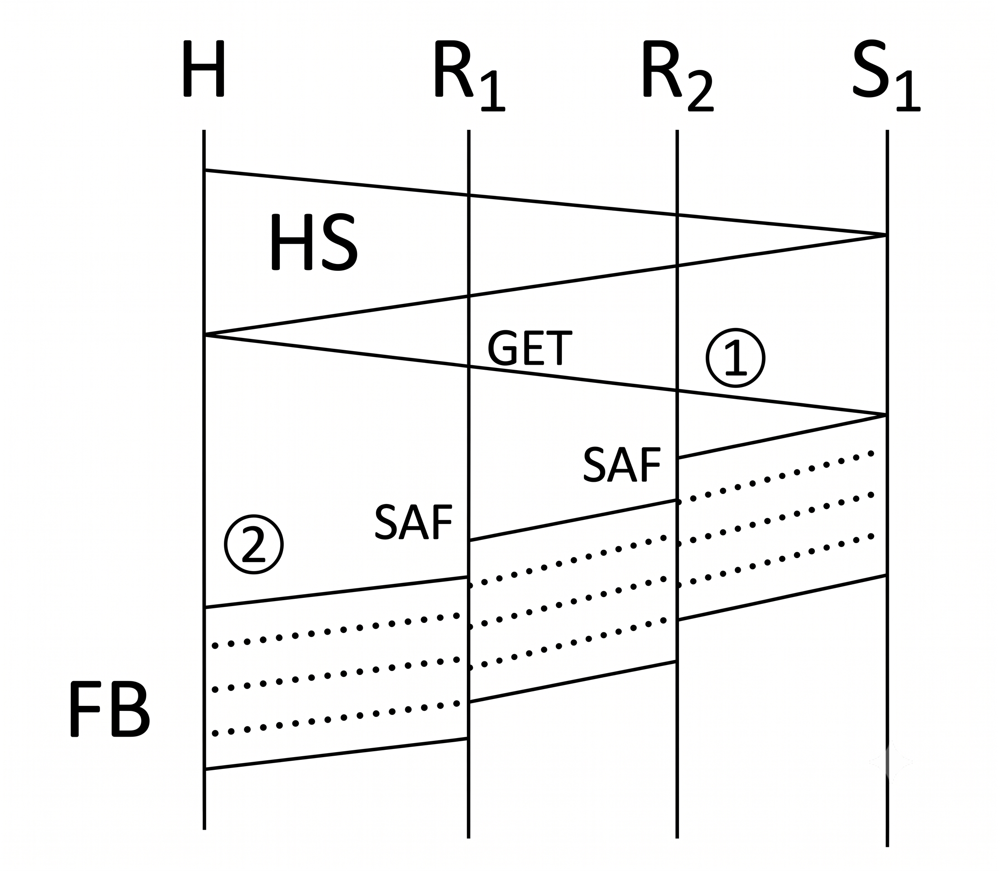
Tempo calcolato per il File Base: 20 propagazioni DNS + 12 propagazioni per i link + 2 trasmissioni pacchetto + 1 trasmissione pagina.
TFB = 12(Tprop) + 2(Ttrasm_pac) + 1(Ttrasm_pag) + 20(Tprop_dns)
FASE 2: Risoluzione DNS e scaricamento Immagine (s2.foo.it)
L'Host H deve scaricare l'immagine. Il DNS Locale ha memorizzato in cache l'IP del Server Autorevole (dns.foo.it). Salta quindi i server Root e TLD, interrogando direttamente l'AUT.
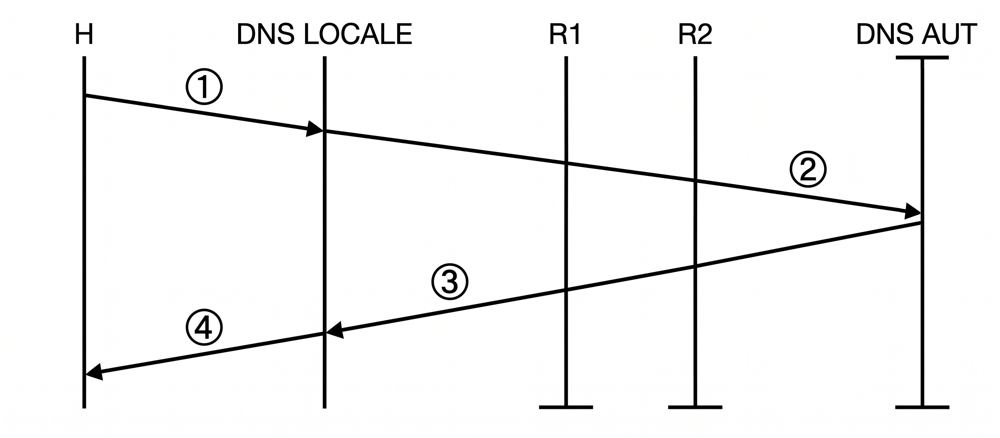
| # | Name | Value | Type | TTL | Azione (Flusso) |
|---|---|---|---|---|---|
| 1 | s2.foo.it | / | A | X | Richiesta (H. richiede l'indirizzo IP del server di s2.foo.it al DNS Locale) |
| 2 | s2.foo.it | / | A | X | Richiesta (Il DNS Locale chiede l'indirizzo IP del Server al DNS Autorevole) |
| 3 | s2.foo.it | 192.198.25.2 | A | X | Risposta (l'Autorevole restituisce l'IP del secondo server) |
| 4 | s2.foo.it | 192.198.25.2 | A | X | Risposta (Il DNS Locale inoltra l'IP all'Host H.) |
Trasmissione HTTP (Immagine):
L'Host H invia la richiesta HTTP GET al server S2:
GET /pics/img.jpg HTTP/1.1 Host: s2.foo.it
Il server S2 risponde (Immagine, 1 MB):
HTTP/1.1 200 OK Content-Type: image/jpeg Content-Length: 1 MB Connection: open
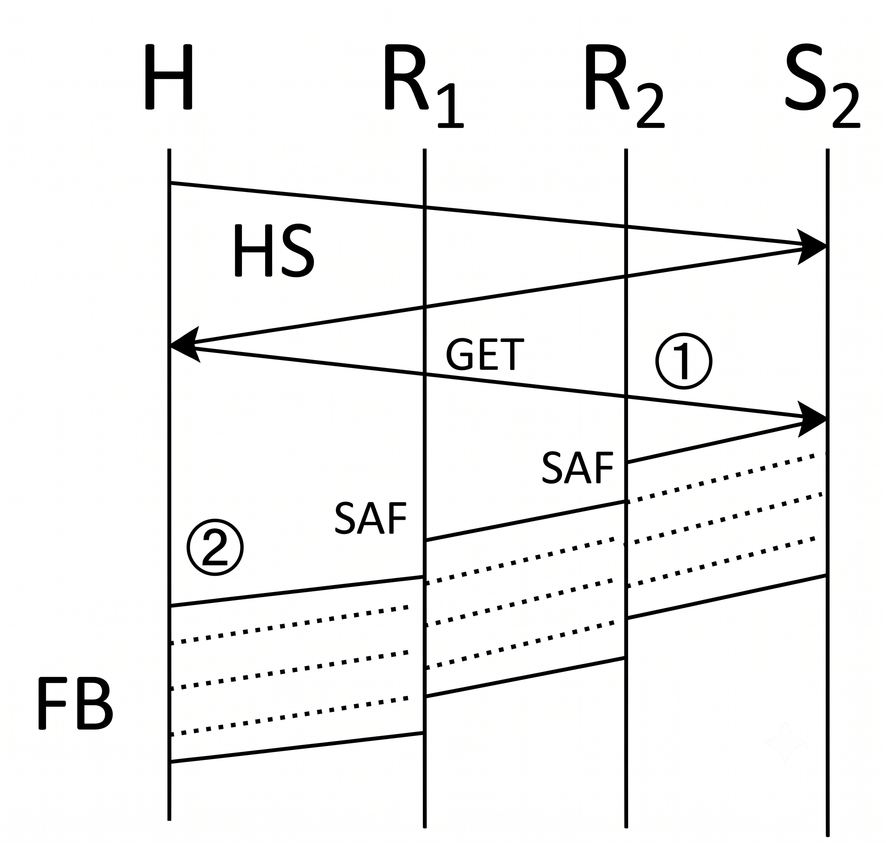
Tempo calcolato per l'Immagine: 8 propagazioni DNS (grazie alla cache si riducono da 10 a 8) + 12 propagazioni per i link + 2 trasmissioni pacchetto + 1 trasmissione immagine.
TIMG = 12(Tprop) + 2(Ttrasm_pac) + 1(Ttrasm_immag) + 8(Tprop_dns)
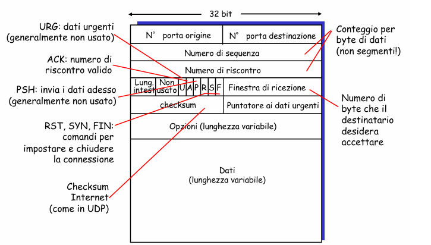
Buffer d'invio e ricezione lato socket; struttura del segmento TCP a 32 bit: porte origine/destinazione, numero di sequenza, numero di riscontro (ACK), flag URG/ACK/PSH/RST/SYN/FIN, finestra di ricezione, checksum, opzioni; esempio numerazione sequenza/ACK con MSS=3 byte.
Numero di sequenza: "numero" del primo byte del segmento nel flusso di byte.
Acknowledgements: numero di sequenza del prossimo byte atteso dall'altro lato; ACK accumulativo. Dipende dall'implementazione come gestisce il destinatario i segmenti fuori sequenza.
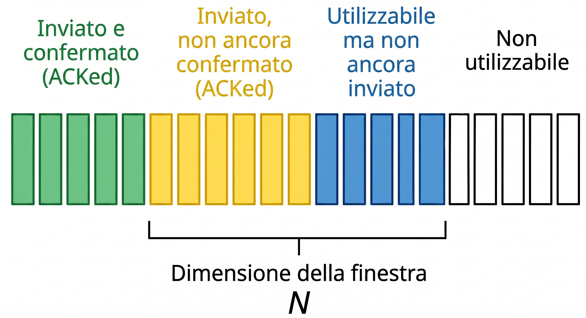
Host A: l'utente digita 'C'. Il segmento viene inviato con Seq=42, ACK=79, data='C'. Host B riscontra la ricezione della 'C' e la rinvia (eco): Seq=79, ACK=43, data='C'. Host A riceve l'eco, riscontra la ricezione di 'C' inviando Seq=43, ACK=80 (nessun dato).
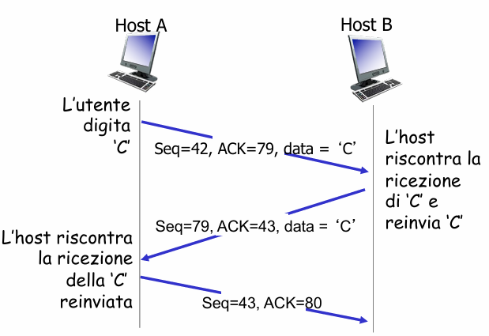
D: Perché si parla di media mobile esponenziale? Suggerimento: espandere la formula rispetto a t-1, poi t-2, e così via, analizzando il peso dato ad ogni addendo.
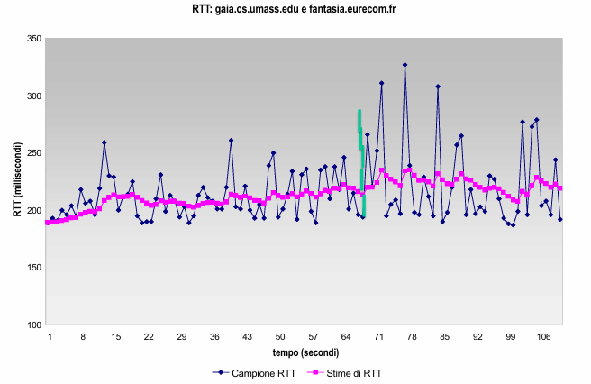
Esempio di stima di RTT tra gaia.cs.umass.edu e fantasia.eurecom.fr: il grafico mostra il campione RTT misurato (linea irregolare) confrontato con la stima EstimatedRTT (linea più levigata) su un intervallo temporale di circa 100 secondi.
EstimatedRTT più un "margine di sicurezza": una grande variazione di EstimatedRTT implica un margine di sicurezza maggiore. Si stima innanzitutto di quanto SampleRTT si discosta da EstimatedRTT:
Un solo timer sul più vecchio pacchetto ancora non riscontrato. Scade il timer: rinvia solo quello "più vecchio" non riscontrato, diventa GoBackN. Effettua le ritrasmissioni solo quando ci sono timeout o ACK duplicati. Versione semplificata: solo timer.
Crea segmenti con il numero di sequenza, se questo ultimo è il numero del primo byte del segmento nel flusso di byte. Avvia timer, se non è già in funzione. Se scade ritrasmette il segmento che ha causato il timeout e riavvia il timer.
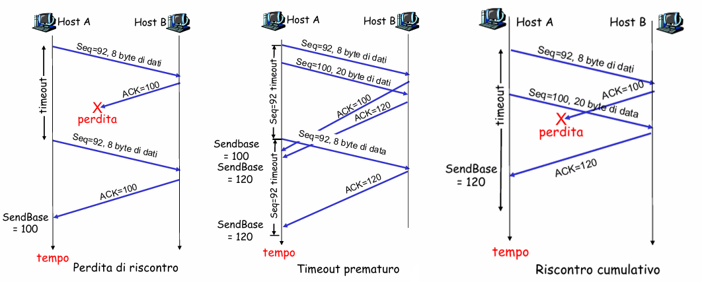
Scenario perdita del riscontro, timeout prematuro, riscontro cumulativo che copre due segmenti.
| Evento presso il destinatario | Azione del destinatario TCP |
|---|---|
| Arrivo ordinato di un segmento con numero di sequenza atteso. Tutti i dati fino al numero di sequenza atteso sono già stati riscontrati. | ACK ritardato. Attende fino a 500 ms l'arrivo del prossimo segmento. Se il segmento non arriva, invia un ACK. |
| Arrivo ordinato di un segmento con numero di sequenza atteso. Un altro segmento è in attesa di trasmissione dell'ACK. | Invia immediatamente un singolo ACK cumulativo, riscontrando entrambi i segmenti ordinati. |
| Arrivo non ordinato di un segmento con numero di sequenza superiore a quello atteso. Viene rilevato un buco. | Invia immediatamente un ACK duplicato, indicando il numero di sequenza del prossimo byte atteso. |
| Arrivo di un segmento che colma parzialmente o completamente il buco. | Invia immediatamente un ACK, ammesso che il segmento cominci all'estremità inferiore del buco. |
Scadenza timeout: raddoppio dell'intervallo di timeout; causata esponenziale dell'intervallo. Riavvio timer per dati dell'applicazione o per la ricezione di ACK; ricomincia dai più recenti valori di EstimatedRTT e DevRTT. Blando controllo della congestione.
Dato che il periodo Timeout spesso è relativamente lungo, rilevare i segmenti perduti tramite ACK duplicati. Se il mittente riceve 3 ACK per lo stesso byte, suppone che il segmento che segue il dato riscontrato è andato perduto: ritrasmissione rapida, ripristina il segmento prima che scada il Timer.
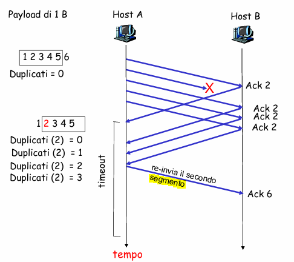
Esempio con 3 ACK duplicati (DupACK=0,1,2,3); controllo di flusso TCP: buffer di ricezione socket TCP; RcvWindow; sender limita i dati non riscontrati.
Il processo applicativo preleva i dati dal buffer della socket TCP, più lentamente di quanto il TCP destinatario li stia ricevendo. Il mittente comunica lo spazio disponibile indicando il valore di RcvWindow nei segmenti: RcvBuffer = MS·SO·dell'host − RcvBuffer. Il mittente limita i dati non riscontrati e RcvWindow garantisce che il buffer di ricezione non vada in overflow.
Passo 1: il client invia un segmento SYN al server. Specifica il numero di sequenza iniziale. Nessun dato.
Passo 2: il server riceve SYN e risponde con un segmento SYNACK. Il server alloca i buffer. Specifica il numero di sequenza iniziale del server.
Passo 3: il client riceve SYNACK e risponde con un segmento ACK, che può contenere dati.
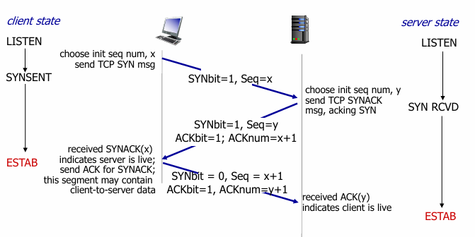
Diagramma handshake a 3 vie completo; chiusura della connessione (FIN/ACK), macchina a stati TCP client (LISTEN→SYN_SENT→ESTABLISHED→FIN_WAIT_1/2→TIMED_WAIT→CLOSED) e server (LISTEN→SYN_RCVD→ESTABLISHED→CLOSE_WAIT→LAST_ACK→CLOSED), output netstat.
Può farlo sia il client sia il server. Nessuno dei due, sia il client.
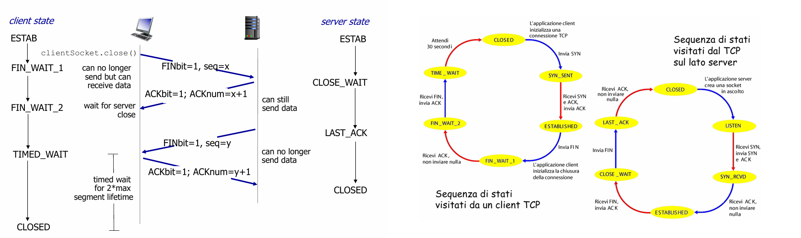
Altre cause: un router, buffer finiti: il mittente ritrasmette il pacchetto perduto. λout è il goodput; ritrasmissione "perfetta" solo quando la perdita è certa: λin > λout. La ritrasmissione del pacchetto ritardato (non perduto) rende λin più grande per lo stesso λout.
Il mittente limita le trasmissioni tramite una "finestra di congestione" (CongWin). Approssimativamente: freq. d'invio = CongWin/RTT byte/sec. CongWin è una funzione dinamica della congestione percepita. Il mittente percepisce la congestione attraverso 2 eventi:
3 meccanismi: Partenza lenta, AIMD (additive-increase multiplicative-decrease), Reazione agli eventi di perdita.
Quando si stabilisce una connessione: CongWin = 1 MSS. La larghezza di banda disponibile potrebbe essere ≫ MSS/RTT. Quando inizia la connessione, la finestra aumenta in modo esponenziale, fino a quando non si verifica un evento di perdita.
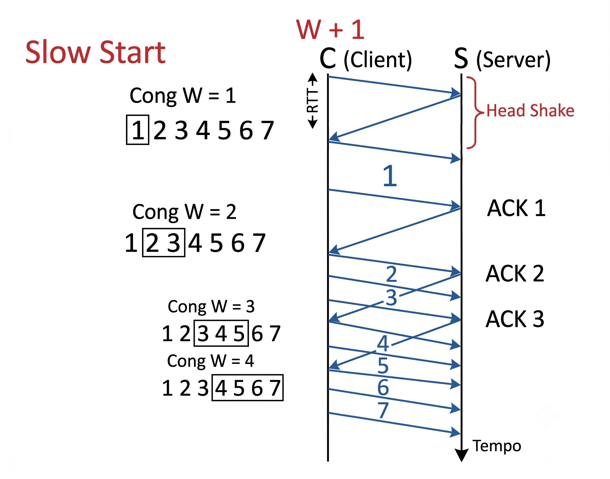
Slow Start: la CongWin raddoppia ad ogni RTT, ciò avviene incrementando CongWin per ogni ACK ricevuto: inizia lento, poi cresce esponenzialmente. 2ACK = 2 CongWin, 3ACK = 3 CongWin, 4ACK = 4 CongWin.
AIMD: incremento additivo e decremento moltiplicativo. Aumenta il tasso trasmissivo sondando la rete, fino a quando non si verifica una perdita.
Se W=4 deve diventare W=5: I ACK=4+x, II ACK=4+2x, III ACK=4+3x, IV ACK=4+4x=5 ⟹ x=1/4. Una grande finestra TCP cresce e diminuisce questo modello a dente di sega: Congestion Avoidance.
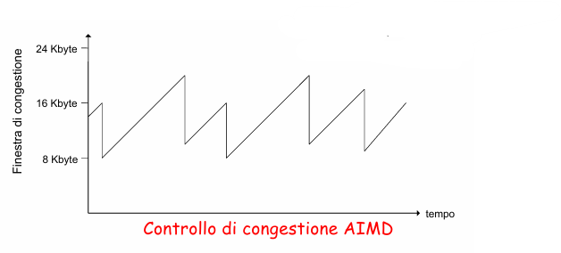
Grafico a "dente di sega" del controllo di congestione AIMD; comportamento TCP Tahoe vs TCP Reno dopo perdita con riferimento a ssthresh (soglia).
N.B.1°L'inizio dell'intera TCP parte: Hand Shake → Slow Start → supera la soglia e poi passa a Congestion Avoidance.
2° già a regime parte da Congestion Avoidance.
TCP: reagisce a un evento di perdita. Perdita indicata da timeout: CongWin impostata a 1 MSS; crescita esponenziale (fino a soglia, poi passaggio a AIMD). Perdita indicata da 3 ACK duplicati (TCP RENO) ⟹ Fast Recovery: CongWin viene dimezzata e si prosegue con AIMD (TCP Tahoe invece imposta sempre CongWin a 1).
Valore Soglia: soglia variabile; quando si rileva una perdita, la soglia si imposta a ½ CongWin.
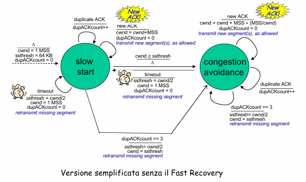
Macchina a stati TCP (semplificata e con Fast Recovery); equità tra connessioni TCP multiple condividendo lo stesso collegamento R.
N.B. Questo è RENO perché se fosse stato Tahoe ritorrebbe sempre a Slow Start.
Se in una rete viaggiano più connessioni di TCP si avrà un'equità tra le finestre più grandi (CWnd = ssthresh + 3 MSS).
Considerando la configurazione Host A — Router — Host B, l'host A deve trasferire un file di dimensione 4 kB all'host B utilizzando il protocollo TCP. Entrambi i link sono privi di errori, ampiezza di banda 10 Mbps, RTT = 2 ms, MSS = 512 byte; si trascurino gli overhead. Si calcoli il tempo necessario all'intero trasferimento, includendo l'instaurazione della connessione, supponendo non ci sia ulteriore traffico né congestione.
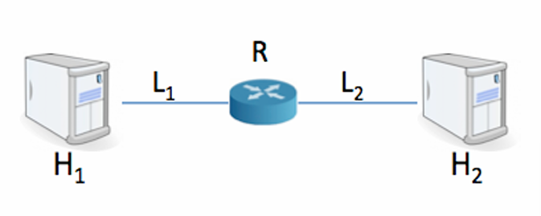
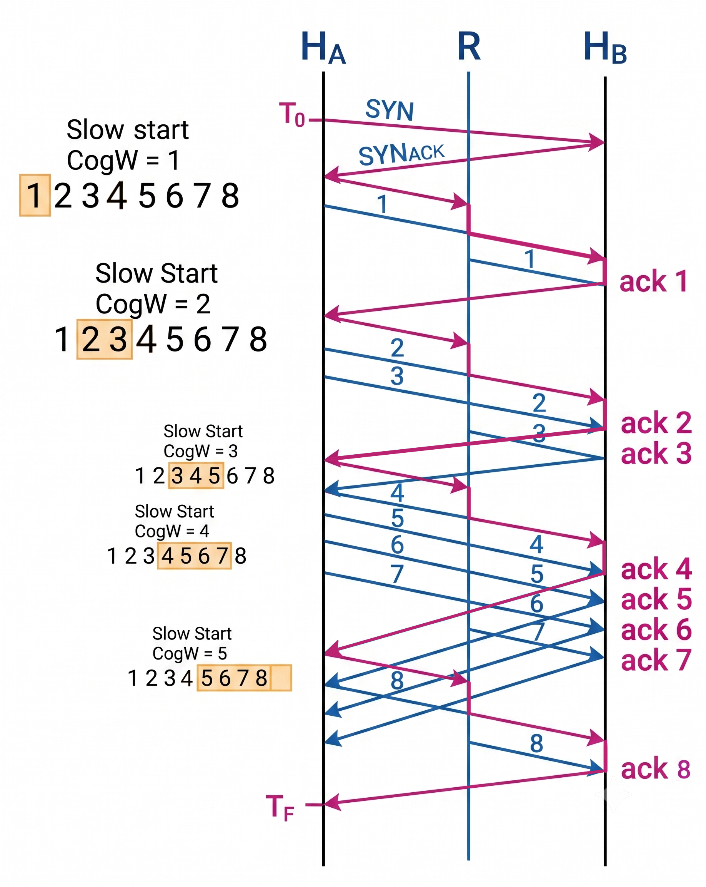
Tra due host direttamente connessi tramite un link con ampiezza di banda pari a 10 Mbps, RTT = 2 ms, MSS = 512 byte si stabilisce una connessione TCP ormai a regime. Si calcoli il tempo necessario alla trasmissione di un file di dimensione 5 kB. Si assuma il valore della finestra di congestione all'inizio della trasmissione di 4MSS, trascurando gli overhead. Si assuma inoltre che si perda il 3° segmento della trasmissione e che il timeout sia fissato a 4,5 ms.
Si assuma che due host A e B siano direttamente connessi tramite un link privo di errori/perdite con ampiezza di banda 10 Mbps, RTT = 2 ms, MSS = 512 byte. L'host A invia all'host B un file di dimensione 5 kB, e al termine dell'handshake l'applicazione in esecuzione sull'host B rimane bloccata nell'interazione con l'utente per 12 ms, e al termine elabora tutti i segmenti ricevuti ed invia all'host A un segmento con payload di 1 byte. La dimensione del buffer di ricezione di B è pari a 5MSS. Si calcoli il tempo totale necessario alla trasmissione del file valutando l'impatto delle tecniche per il controllo della congestione e del controllo del flusso.
Schema di base mittente/ricevente con errori e ACK; confronto Go-Back-N (lavoro in gruppo) vs Selective Repeat (selettivo/individuale).
Mittente: numero di sequenza a N bit nell'intestazione del pacchetto. "Finestra" contenente fino a N pacchetti consecutivi non riscontrati. ACK(n): riscontro di tutti i pacchetti con numero di sequenza minore o uguale a N (cumulativo). Timer per il più vecchio pacchetto non riscontrato. Timeout: ritrasmette tutti i pacchetti non riscontrati.
Pseudo-codice mittente/ricevente per Go-Back-N; esempio di funzionamento; dilemma su dimensione finestra e numeri di sequenza (es. N=4 e dimensione finestra=4).
Il mittente può avere fino a N pacchetti senza ACK in pipeline. Il ricevente dà invia ACK individuali per ogni pacchetto. Il mittente mantiene un timer per ciascun pacchetto che non ha ancora ricevuto ACK. Quando scade il timer, ritrasmette solo i pacchetti che non hanno avuto ACK.
Il ricevente invia riscontri specifici per tutti i pacchetti ricevuti correttamente, buffer dei pacchetti.
Pseudo-codice mittente/ricevente per Selective Repeat; esempio di funzionamento; dilemma su dimensione finestra e numeri di sequenza (es. N=4 e dimensione finestra=4).
Dati due host collegati come in figura, si supponga che il primo debba trasferire al secondo un file di 2,5 kB, usando il protocollo GoBackN. Si assuma un RTT tra i due host pari a 0,2 ms ed ampiezze di banda per i due collegamenti rispettivamente pari a R1=200 Mbps e R2=100 Mbps, MSS=256 byte, overhead di pacchetto trascurabili e timeout pari ad 1 ms. Ipotizzando che si perda il quinto segmento, e che la dimensione statica della finestra di spedizione sia pari a 4MSS, si calcolino il throughput e il goodput.
Stesso scenario, ma si ipotizza che si perda il riscontro del quinto segmento (non il segmento stesso), con timeout pari a 1 ms.
Dati due host collegati come in figura, si supponga che il primo debba trasferire al secondo un file di 2,5kB, usando il protocollo Selective Repeat. RTT = 0,2 ms, L1=100 Mbps, L2=200 Mbps, MSS=256 byte, overhead trascurabile, timeout = 1 ms. Si perde il quarto segmento, finestra statica = 4MSS. Si calcolino throughput e goodput.
Stesso scenario, ma con perdita del riscontro del quarto segmento (non del segmento), Selective Repeat.
Il livello di rete ha due funzioni chiave:
Non interessa 'da dove si parte' (il mittente), ma solo 'dove si deve arrivare' (il destinatario). Questa informazione vitale si trova scritta nell'intestazione del datagramma.
Modello di servizio del livello di rete: Internet adotta un servizio "Best Effort".
Struttura interna di un router: processore di instradamento, struttura di commutazione, porte di ingresso/uscita; dettaglio porta di ingresso: line termination → data link processing → lookup/forwarding/queueing → switch fabric.
Due funzioni chiave: fare girare i protocolli/algoritmi d’instradamento; inoltro dei datagrammi dai collegamenti in ingresso a quelli in uscita.
Porta di ingresso: livello fisico — terminazione di linea; livello di collegamento — elaborazione protocollo, incapsulamento (es. Ethernet); ricerca, forwarding, accodamento (lookup/forwarding/queueing).
L'IP: 32 bit. Rappresentazione esplicita di tutti i possibili indirizzi: se indirizzi a 32 bit ⟹ 4 miliardi di indirizzi. Approccio inattuabile. Si usa invece una rappresentazione degli intervalli di indirizzi: non servono 4 miliardi di righe, basta confrontare un prefisso dell'indirizzo (longest prefix matching, corrispondenza di prefisso).
| Intervallo degli indirizzi di destinazione | Interfaccia |
|---|---|
| da 11001000 00010111 00010000 00000000 a 11001000 00010111 00010111 11111111 | 0 |
| da 11001000 00010111 00011000 00000000 a 11001000 00010111 00011000 11111111 | 1 |
| da 11001000 00010111 00011001 00000000 a 11001000 00010111 00011111 11111111 | 2 |
| altrimenti | 3 |
Esempio di tabella d'inoltro basata su intervalli di indirizzi.
La stessa tabella, espressa come corrispondenza di prefisso (longest prefix matching):
| Prefisso dell'indirizzo | Interfaccia |
|---|---|
| 11001000 00010111 00010 | 0 |
| 11001000 00010111 00011000 | 1 |
| 11001000 00010111 00011 | 2 |
| altrimenti | 3 |
Trasferisce i pacchetti dai buffer di input agli appropriati buffer di output. Lo switching rate è la frequenza con cui i pacchetti possono essere trasferiti dall'input all'output. Esistono tre tipi di strutture di commutazione:
Prima generazione di router: erano tradizionali calcolatori, e la commutazione era effettuata sotto il controllo diretto della CPU. Il pacchetto veniva copiato nella memoria del processore; i pacchetti venivano trasferiti dalle porte d'ingresso a quelle d'uscita con una frequenza totale inferiore a B/2 (se in memoria si possono scrivere o leggere B bit al secondo). La memoria può essere scritta o letta a B bps: le porte d'ingresso e d'uscita comunicano tramite il bus di sistema.
Le porte d'ingresso trasferiscono un pacchetto direttamente alle porte d'uscita su un bus condiviso. C'è contesa per il bus: la larghezza di banda della commutazione è limitata da quella del bus. Il Cisco 5600 opera con un bus da 32 Gbps: sufficiente per router che operano in reti d'accesso o aziendali.
Supera il limite di banda di un singolo bus condiviso. Un crossbar switch è una rete d'interconnessione composta da 2n bus che collegano n porte d'ingresso a n porte d'uscita. Gli switch Cisco 12000 usano una rete d'interconnessione che raggiunge i 60 Gbps nella struttura di commutazione.
Se la struttura di commutazione è più lenta dell'insieme delle porte di input, si verifica accodamento nelle code di input, con conseguente ritardo di accodamento e possibile perdita per overflow del buffer d'ingresso.
Struttura tipica: switch fabric → datagram buffer/queueing → link layer protocol (send) → line termination.
Si verifica buffering quando la velocità di arrivo dei pacchetti dalla struttura di commutazione supera la velocità della linea di uscita (nell'istante t più pacchetti arrivano dall'input verso lo stesso output; un tempo di pacchetto dopo, devono essere smaltiti in sequenza). Se il buffer overflow si verifica nelle porte di uscita, si ha accodamento (ritardo) e perdita di pacchetti.
Uno sguardo al livello di rete Internet: il livello di trasporto (TCP, UDP) si appoggia sul livello di rete, composto da: protocolli di instradamento (selezione di percorso: RIP, OSPF, BGP), protocollo IP (convenzioni di indirizzamento, formato dei datagrammi, convenzioni di manipolazione dei pacchetti), tabella d'inoltro, protocollo ICMP (notifica degli errori, segnalazioni del router); il tutto appoggiato sul livello di collegamento e fisico.
Header IP a 32 bit: numero di versione, lunghezza intestazione, tipo di servizio, lunghezza del datagramma, identificatore/flag/spiazzamento di frammentazione, tempo di vita (TTL), protocollo di livello superiore, checksum, indirizzi IP origine/destinazione, campi opzionali, dati. I datagrammi con segmenti TCP hanno 40 byte d'intestazione (20 IP + 20 TCP).
Tempo di vita: si decrementa ogni volta che viene elaborato dal router.
Frammentazione: un router invia un pacchetto se eccede l'MTU del collegamento; l'IP frammenta i datagrammi, frammentazione a 1 bit. Il checksum: poiché molti campi sono decisi dal livello sottostante, viene rimosso e ricalcolato dal livello otto.
L'unità massima di trasmissione (MTU, Maximum Transmission Unit) è la massima quantità di dati che un frame a livello di collegamento può trasportare; collegamenti di tipo diverso hanno MTU diverse. Quando un datagramma IP è troppo grande per il collegamento su cui deve essere inoltrato, viene suddiviso ("frammentato") in datagrammi IP più piccoli, ciascuno instradato autonomamente. I frammenti vengono riassemblati solo una volta raggiunta la destinazione finale: sono i bit dell'intestazione IP (identificatore, flag e spiazzamento) a permettere di identificare, ordinare e ricomporre correttamente i frammenti.
Il valore di spiazzamento (offset) è espresso in multipli di 8 byte: 1480/8 = 185 per il secondo frammento.
Ogni interfaccia di host e router connessa a Internet possiede un indirizzo IP globalmente univoco a 32 bit. Per interfaccia si intende il confine tra l'host (o il router) e il collegamento fisico: un host, in genere, ha un'unica interfaccia, mentre un router deve necessariamente essere connesso ad almeno due collegamenti, e quindi possiede più interfacce, ciascuna con il proprio indirizzo IP.
L'indirizzo IP a 32 bit viene normalmente rappresentato in notazione decimale puntata (dotted decimal notation): ciascuno dei quattro byte è espresso come numero decimale compreso tra 0 e 255, separato da un punto.
Un indirizzo IP si compone di due parti: la parte di sottorete (i bit di ordine più alto) e la parte di host (i bit di ordine più basso). Una sottorete — nella letteratura Internet chiamata anche "rete IP" — è una rete isolata i cui punti terminali sono collegati all'interfaccia di un host o di un router: le interfacce appartenenti alla medesima sottorete possono comunicare direttamente tra loro, senza dover passare attraverso un router.
Per individuare le sottoreti di una rete si può "staccare" idealmente ciascuna interfaccia da host e router, creando isole di rete isolate: ciascuna isola così ottenuta costituisce una sottorete IP indipendente, ad esempio 223.1.1.0/24, 223.1.2.0/24, 223.1.3.0/24, dove /24 indica la maschera di sottorete (i primi 24 bit identificano la parte di rete).
Il CIDR è la strategia generalizzata di assegnazione degli indirizzi che ha sostituito il precedente indirizzamento a classi. Nella struttura dell'indirizzo, la parte di sottorete e la parte host possono avere lunghezza arbitraria (non più vincolata ai confini di byte delle classi A/B/C): l'indirizzo IP viene espresso in forma decimale puntata seguita da /x, dove x indica il numero di bit riservati alla parte di rete (di sottorete).
Prima dell'introduzione del CIDR, gli indirizzi IP venivano assegnati secondo un prefisso di rete di lunghezza fissa: la classe di un indirizzo era codificata nei suoi bit più significativi.
| Classe | Bit iniziali | Id 1° byte | Lung. prefisso | N° reti | Lung. host | N° host per rete |
|---|---|---|---|---|---|---|
| A | 0 | 0–127 | 7 bit | 128 | 24 bit (3 byte) | 16.777.214 |
| B | 10 | 128–191 | 14 bit | 16.384 | 16 bit (2 byte) | 65.534 |
| C | 110 | 192–223 | 21 bit | 2.097.152 | 8 bit (1 byte) | 254 |
Convenzioni: tutti i bit della parte host posti a 1 identificano l'indirizzo di broadcast (il datagramma viene consegnato a tutti gli host della sottorete); tutti i bit della parte host posti a 0 identificano l'indirizzo della rete stessa.
La maschera di rete (netmask) è una sequenza di 32 bit associata a un indirizzo che permette di individuare il confine tra il prefisso di rete e la parte host: i bit posti a 1 identificano la parte di rete, quelli posti a 0 la parte host.
Un secondo esempio: indirizzo 147.163.222.129 con netmask 255.255.255.0 (/24) individua la sottorete 147.163.222.0 e il broadcast 147.163.222.255.
Per stabilire se il destinatario si trova nella propria sottorete, l'host esegue l'AND logico tra il proprio indirizzo IP e la propria netmask, e l'AND logico tra l'indirizzo di destinazione e la propria netmask; se i due risultati coincidono, il pacchetto viene inviato direttamente al livello di collegamento senza passare dal router, altrimenti viene inoltrato al router.
Il router verifica anzitutto se il destinatario appartiene a una delle sottoreti direttamente connesse (come nel caso dell'host); in caso contrario, per ogni riga della propria tabella di inoltro esegue l'AND logico tra l'indirizzo di destinazione e la netmask della riga, verificando se il risultato coincide con la rete di destinazione indicata. Tra tutte le righe per cui la verifica ha successo, il router sceglie quella con la netmask più lunga (longest prefix match); se nessuna riga corrisponde, il pacchetto viene inviato sulla default route.
| Blocco | Indirizzo |
|---|---|
| ISP (blocco intero) | 200.23.16.0/20 |
| Organizzazione 0 | 200.23.16.0/23 |
| Organizzazione 1 | 200.23.18.0/23 |
| Organizzazione 2 | 200.23.20.0/23 |
| … | … |
| Organizzazione 7 | 200.23.30.0/23 |
D: Cosa bisogna fare per assegnare un indirizzo IP a un host?
/etc/rc.config; MAC: preferenze di sistema → networkScenario client-server DHCP: Identificazione DHCP, Offerta DHCP, Richiesta DHCP, Conferma DHCP, con campi src/dest/yiaddr/transaction ID/lifetime.
Output Wireshark di una richiesta (Boot Request) e risposta (Boot Reply) DHCP reale, con i campi Transaction ID, Client MAC address, opzioni Message Type/Server Identifier/Subnet Mask/Router/Domain Name Server.
Schema NAT: rete locale (10.0.0.0/24) verso Internet globale tramite un singolo indirizzo IP pubblico (138.76.29.7); i router NAT non appaiono come router ma come un unico dispositivo con un unico indirizzo IP.
Motivazioni del NAT (risparmio di indirizzi pubblici, possibilità di cambiare ISP senza modificare gli indirizzi interni, sicurezza); implementazione: generazione di un nuovo numero di porta, sostituzione IP/porta origine.
Il router abilitato alla NAT nasconde i dettagli della rete domestica al mondo esterno: non è necessario allocare un intervallo di indirizzi da un ISP (un unico indirizzo IP è sufficiente); è possibile cambiare gli indirizzi delle macchine private senza comunicarlo all'Internet globale; è possibile cambiare ISP senza modificare gli indirizzi della rete privata; i dispositivi interni non sono esplicitamente indirizzabili e visibili dal mondo esterno (un plus per la sicurezza).
Implementazione: quando un router NAT riceve il datagramma, genera per esso un nuovo numero di porta d'origine (es. 5001), sostituisce l'indirizzo IP origine con il proprio indirizzo IP sul lato WAN (es. 138.76.29.7) e sostituisce il numero di porta origine iniziale (es. 3348) con il nuovo numero (5001).
| Prefissi di rete | Classe | N° prefissi |
|---|---|---|
| 10.0.0.0 / 8 | A | 1 |
| 172.16.0.0 – 172.31.0.0 / 12 | B | 16 |
| 192.168.0.0 – 192.168.255.0 / 16 | C | 256 |
Tabella dei prefissi privati per classe (RFC 1918).
Formato dell'header IPv6 (VER, PRI, Flow label, Payload len, Next hdr, Hop limit, indirizzi sorgente/destinazione a 128 bit, dati); tecnica di tunneling IPv6-su-IPv4; esempio di subnetting; tabella dei messaggi ICMP.
Eliminati i campi frammentazione. Il checksum: poiché poco utile, viene rimosso dal livello otto. ICMPv6: nuova versione di ICMP. Non è possibile aggiornare simultaneamente tutti i router; non si può dichiarare una "giornata morta".
Tunneling: IPv6 viene trasportato come payload in datagrammi IPv4 quando attraversa router IPv4 (vista logica vs vista fisica del tunnel).
Usato da host e router per scambiarsi informazioni a livello di rete; riporto degli errori: Host irraggiungibile, rete, porta, protocollo irraggiungibili; echo request/reply (usato dal comando ping). Livello rete "sopra" IP: ICMP è incapsulato in pacchetti IP. I messaggi ICMP hanno un campo tipo e un campo codice, e contengono l'intestazione e i primi 8 byte del datagramma IP che ha causato l'errore.
| Tipo | Codice | Descrizione |
|---|---|---|
| 8 | 0 | richiesta eco (echo request - usato da ping) |
| 0 | 0 | risposta eco (echo reply) |
| 3 | 0 | rete destinazione irraggiungibile |
| 3 | 1 | host destinazione irraggiungibile |
| 3 | 2 | protocollo destinazione irraggiungibile |
| 3 | 3 | porta destinazione irraggiungibile |
| 3 | 6 | rete destinazione irraggiungibile |
| 3 | 7 | host destinazione irraggiungibile |
Sia [X₀ X₁ X₂ X₃ X₄ X₅ X₆] il numero di matricola dello studente. Si calcoli: matricola 0 7 7 4 4 0 9, e si determinino i valori Y₁…Y₆ secondo le formule date.
Calcolo dei valori Y₁…Y₆ a partire dalla matricola, ed enunciato del Quesito 1 sul tempo di trasmissione TCP con timeout fissato a 2 ms dopo il termine della trasmissione del segmento perso (8°), con calcolo del throughput e goodput.
Il livello di rete ha due funzioni: forwarding (sposta i pacchetti dal router di input a un appropriato router di output) e routing (determina il percorso che devono seguire i pacchetti dalla sorgente alle destinazioni).
Ci sono due approcci per il piano di controllo: controllo per-router (tradizionale) e controllo centralizzato (Software Defined Networks).
Controllo per-router: ogni router esegue un algoritmo di routing e interagisce con gli altri per calcolare le tabelle d'inoltro; controllo centralizzato: un controller remoto interagisce con agenti di controllo locali nei router, indicando le tabelle d'inoltro.
Grafo: G = (N, E). N = insieme di nodi (router) = {u,v,w,x,y,z}. E = insieme di archi (collegamenti) = {(u,v),(u,x),...}. Costo del collegamento (x,x') = c(x,x') — es. c(w,z) = 5.
Il costo di un cammino è semplicemente la somma di tutti i costi degli archi lungo il cammino. Costo di un cammino (x₁,x₂,x₃,...,xₚ) = c(x₁,x₂)+c(x₂,x₃)+...+c(xp−1,xp).
L'algoritmo riceve in input tutti i collegamenti tra i nodi e i loro costi. Algoritmi a stato del collegamento (link-state algorithm).
Ogni nodo elabora un vettore di stime dei costi (distanze) verso tutti gli altri nodi della rete. Il cammino a costo minimo viene calcolato in modo distribuito e iterativo: algoritmo a vettore distanza (distance-vector algorithm, VC).
Statico: i cammini cambiano molto raramente
Dinanico: Determinano gli instradamenti al variare di volume di traffico e topologia della rete
Notazione:
Grafo di esempio con nodi u,v,w,x,y,z e costi: c(u,v)=2, c(u,x)=1, c(u,w)=5, c(x,v)=2, c(x,w)=3, c(x,y)=1, c(w,y)=3, c(w,z)=5, c(v,w)=3, c(y,z)=2. Applicando l'algoritmo a partire dall'origine u si ottiene la seguente tabella d'iterazione:
| Passo | N' | D(v),p(v) | D(w),p(w) | D(x),p(x) | D(y),p(y) | D(z),p(z) |
|---|---|---|---|---|---|---|
| 0 | u | 7,u | 3,u | 5,u | ∞ | ∞ |
| 1 | uw | 6,w | 5,u | 11,w | ∞ | |
| 2 | uwx | 6,w | 11,w | 14,x | ||
| 3 | uwxv | 10,v | 14,x | |||
| 4 | uwxvy | 12,y | ||||
| 5 | uwxvyz |
Le celle vuote indicano che il valore resta invariato rispetto all'iterazione precedente (il nodo è già entrato in N' oppure non viene aggiornato).
Dai valori di p(v) si ricostruisce il cammino a costo minimo da u verso ogni altro nodo, e da questo la tabella d'inoltro del nodo u:
| Destinazione | Collegamento in uscita |
|---|---|
| v | (u,v) |
| x | (u,x) |
| y | (u,x) |
| w | (u,x) |
| z | (u,x) |
Complessità dell'algoritmo, con n nodi: ciascuna iterazione richiede il controllo su tutti i nodi w non ancora in N', quindi complessivamente n(n+1)/2 confronti, cioè O(n²). L'implementazione più efficiente possibile raggiunge O(n log n).
Possibili oscillazioni: se il costo di un collegamento viene fatto dipendere dalla quantità di traffico che trasporta, l'instradamento calcolato da Dijkstra può oscillare nel tempo. Ad esempio, con una rete a 4 nodi (A, B, C, D) in cui i costi dei collegamenti dipendono dal traffico corrente, l'instradamento iniziale porta a spostare il traffico su nuovi collegamenti a basso costo; questo però fa aumentare il costo di quei collegamenti nell'iterazione successiva, inducendo l'algoritmo a spostare nuovamente il traffico altrove, e così via: il sistema non converge ma oscilla continuamente tra configurazioni di instradamento diverse.
Esempio: dv(z)=5, dx(z)=3, dw(z)=3 ⟹ Bellman-Ford determina du(z) = min{c(u,v)+dv(z), c(u,x)+dx(z), c(u,w)+dw(z)} = min{2+5, 1+3, 5+3} = 4.
Dx(y) = stima del costo del percorso a costo minimo da se stesso al nodo y.
Vettore distanze: Dx = [Dx(y) : y in N] array.
Il nodo x conosce il costo verso ciascun vicino v: c(x,v).
Il nodo x mantiene Dx = [Dx(y) : y in N], e anche i vettori distanza di ciascuno dei suoi vicini Dv = [Dv(y) : y in N].
È un algoritmo iterativo, asincrono, distribuito. Ogni iterazione locale è causata da: cambio del costo di un collegamento locale; ricezione da qualche vicino di un vettore distanza aggiornato. Distribuito: ogni nodo informa i propri vicini solo quando il proprio DV cambia.
+----+ | | | v | Attende (un messaggio del cambio del costo di porta del vicino) | | | v | Effettua il calcolo | | | v | Se DV cambia, lo notifica ai vicini | | +----+
Rete a tre nodi x, y, z con costi diretti c(x,y)=2, c(x,z)=7, c(y,z)=1:
2
x ------- y
\ /
7 \ / 1
\ /
z
t=0 — ciascun nodo conosce solo i costi verso i propri vicini diretti; tutte le altre distanze sono impostate a infinito:
| nodo x | costo verso | ||
|---|---|---|---|
| da | x | y | z |
| x | 0 | 2 | 7 |
| y | ∞ | ∞ | ∞ |
| z | ∞ | ∞ | ∞ |
| nodo y | costo verso | ||
|---|---|---|---|
| da | x | y | z |
| x | ∞ | ∞ | ∞ |
| y | 2 | 0 | 1 |
| z | ∞ | ∞ | ∞ |
| nodo z | costo verso | ||
|---|---|---|---|
| da | x | y | z |
| x | ∞ | ∞ | ∞ |
| y | ∞ | ∞ | ∞ |
| z | 7 | 1 | 0 |
Dopo il primo scambio dei vettori distanza con i vicini, ogni nodo applica Bellman-Ford. Ad esempio il nodo x calcola:
Convergenza (dopo lo scambio delle tabelle aggiornate, il calcolo si ripete finché nessun DV cambia più):
| nodo x | costo verso | ||
|---|---|---|---|
| da | x | y | z |
| x | 0 | 2 | 3 |
| y | 2 | 0 | 1 |
| z | 7 | 1 | 0 |
| nodo y | costo verso | ||
|---|---|---|---|
| da | x | y | z |
| x | 0 | 2 | 7 |
| y | 2 | 0 | 1 |
| z | 7 | 1 | 0 |
| nodo z | costo verso | ||
|---|---|---|---|
| da | x | y | z |
| x | 0 | 2 | 7 |
| y | 2 | 0 | 1 |
| z | 3 | 1 | 0 |
Ogni nodo converge alla stessa matrice dei costi minimi: Dx=[0,2,3], Dy=[2,0,1], Dz=[3,1,0]. Da questo momento nessun nodo modifica più il proprio DV e l'algoritmo si ferma finché non cambia il costo di un collegamento.
| nodo x | costo verso | ||
|---|---|---|---|
| da | x | y | z |
| x | 0 | 2 | 3 |
| y | 2 | 0 | 1 |
| z | 3 | 1 | 0 |
| nodo y | costo verso | ||
|---|---|---|---|
| da | x | y | z |
| x | 0 | 2 | 3 |
| y | 2 | 0 | 1 |
| z | 3 | 1 | 0 |
| nodo z | costo verso | ||
|---|---|---|---|
| da | x | y | z |
| x | 0 | 2 | 3 |
| y | 2 | 0 | 1 |
| z | 3 | 1 | 0 |
Quando un nodo rileva che un collegamento a cui è direttamente connesso ha cambiato costo, aggiorna il proprio vettore distanza; se il costo del percorso minimo verso qualche destinazione è cambiato, lo notifica ai vicini.
4→1
x ------- y
\ /
1 \ / 50
\ /
z
Situazione iniziale (convergente): c(x,y)=4, c(y,z)=50, c(z,x)=1. I nodi hanno già calcolato
Dz(x)=5
Dx(x)=0
Dy(x) = C(y,z)+Dz(x) = 1 + 5 = 6
oppure
Dy(x) = C(y,x)+Dx(x) = 4 + 0 = 4 <- minimo
Se C(x,y) diventa 1
Dz(x)=2
Dx(x)=0
Dy(x) = C(y,z)+Dz(x) = 1 + 2 = 3
oppure
Dy(x) = C(y,x)+Dx(x) = 1 + 0 = 1 <- minimo
4→60
x ------- y
\ /
50 \ / 1
\ /
z
Stessa rete, ma questa volta il costo C(x,y) aumenta da 4 a 60. Prima del cambio, z raggiungeva x passando per y (costo 5). Quando y rileva il cambiamento di C(y,x), ricalcola il proprio vettore distanza usando il valore Dz(x)=5, che però dipendeva da y stesso!
Nodo y
C(y,x) + Dx(x) = 60 + 0 = 60
C(y,z) + Dz(x) = 1 + 5 = 6 ← minimo Dy = [(x, 6)]
y crede di poter usare z con costo 6 e glielo notifica. Inizia il loop:
Nodo z
C(z,x) + Dx(x) = 50 + 0 = 50
C(z,y) + Dy(x) = 1 + 6 = 7 ← minimo Dz = [(x, 7)]
Nodo y
C(y,x) + Dx(x) = 60 + 0 = 60
C(y,z) + Dz(x) = 1 + 7 = 8 ← minimo Dy = [(x, 8)]
Nodo z
C(z,x) + Dx(x) = 50 + 0 = 50
C(z,y) + Dy(x) = 1 + 8 = 9 ← minimo Dz = [(x, 9)]
...e così via. I costi aumentano di 1 in 1 fino a superare 50. Questo è il conteggio all'infinito.
4→60
x ------- y
\ /
50 \ / 1
\ /
z
Per risolvere il problema ed evitare le oscillazioni, si applica questa regola: se z usa y per raggiungere x, z mente a y dicendogli che la sua distanza per x è infinita (Dz(x) = ∞). In questo modo y non proverà a usare z come percorso alternativo.
Cambio C(y,x) = 60
Nodo y
C(y,x) + Dx(x) = 60 + 0 = 60 ← minimo Dy = [(x, 60)]
C(y,z) + Dz(x) = 1 + ∞ = ∞ (avvelenato da z)
Nodo z
C(z,x) + Dx(x) = 50 + 0 = 50 ← minimo Dz = [(x, 50)]
C(z,y) + Dy(x) = 1 + 60 = 61
(Passando direttamente da x, z non ha più bisogno di y. Quindi smette di avvelenare il percorso e notifica il suo costo reale: 50)
Nodo y
C(y,x) + Dx(x) = 60 + 0 = 60
C(y,z) + Dz(x) = 1 + 50 = 51 ← minimo Dy = [(x, 51)]
Nodo z (controllo finale)
C(z,x) + Dx(x) = 50 + 0 = 50 ← minimo Dz = [(x, 50)]
C(z,y) + Dy(x) = 1 + 51 = 52
La rete converge istantaneamente ai valori corretti senza conteggi infiniti.
Regola generale per attenuare (non eliminare del tutto) il problema del conteggio all'infinito: se z instrada verso x passando per y, allora z comunica a y che la propria distanza (di z) verso x è infinita — anche se non è vero. In questo modo y non sceglierà mai z come prossimo salto per raggiungere x, evitando che si formi un ciclo d'instradamento y→z→y tra i due nodi.
Limiti: l'inversione avvelenata risolve i cicli a due nodi, ma non impedisce cicli d'instradamento che coinvolgono tre o più nodi.
Tabella di confronto complessità messaggi/velocità di convergenza/robustezza tra Link-State (LS) e Distance-Vector (DV).
| Complessità dei messaggi | Velocità di convergenza | Robustezza | |
|---|---|---|---|
| LS | con n nodi, E collegamenti, implica l'invio di O(nE) messaggi | algoritmo O(n²) richiede O(nE) messaggi | un router può comunicare via broadcast un costo sbagliato per uno dei suoi collegamenti (non per gli altri); i nodi si occupano solo di calcolare le proprie tabelle |
| DV | richiede scambi tra nodi adiacenti | può convergere lentamente: può presentare cicli d'instradamento; può presentare il problema del conteggio all'infinito | un nodo può comunicare cammini a costo minimo errati a tutte le destinazioni; la tabella di ciascun nodo è usata da altri — un calcolo errato si può diffondere per l'intera rete |
Finora la rete è stata vista come una collezione di router interconnessi, tutti indistinguibili tra loro — una visione omogenea della rete. Nella pratica le cose non sono così semplici, per due motivi principali:
Sistemi autonomi interconnessi: AS1, AS2, AS3. Ciascun sistema autonomo sa come inoltrare pacchetti lungo il percorso ottimo verso qualsiasi destinazione interna al gruppo (algoritmo d'instradamento intra-AS + tabella d'inoltro). I protocolli d'instradamento dei diversi AS non sono necessariamente gli stessi. I router 1b, 1c, 2a e 3a sono gateway.
Esempio: dal router A alle varie sottoreti u, v, w, x, y, z — destinazione u = 1 hop; v, w = 2 hop; x, y = 3 hop; z = 2 hop.
Tabella d'instradamento RIP: un processo chiamato routed esegue RIP, mantenendo le informazioni d'instradamento e scambiando messaggi con i processi routed dei router vicini. Poiché RIP è implementato come processo a livello di applicazione, può inviare e ricevere messaggi su una socket standard usando un protocollo di trasporto standard (UDP), appoggiandosi sopra IP e il livello di collegamento fisico.
Rappresenta l'attuale standard de facto per l'instradamento inter-AS in Internet, ed è basato su Distance-Vector. BGP mette a disposizione di ciascun AS un modo per:
BGP consente inoltre a ciascuna sottorete di comunicare la propria esistenza al resto di Internet.
Se un router in AS1 riceve un datagramma la cui destinazione ricade fuori da AS1, deve inoltrarlo verso uno dei due gateway — ma quale? AS1 deve: (1) sapere quali destinazioni sono raggiungibili attraverso AS2 e quali attraverso AS3; (2) informare tutti i router interni in modo che ciascuno configuri la propria tabella d'inoltro per le destinazioni esterne. Questo è il compito dell'instradamento inter-AS.
I router gateway eseguono entrambi i protocolli eBGP (tra AS differenti) e iBGP (all'interno dello stesso AS).
I messaggi BGP rappresentano i percorsi come prefisso + attributi = "route". Due attributi importanti:
Policy-based routing: i router gateway decidono se accettare o declinare un percorso in base alla import policy (es. mai instradare attraverso l'AS Y). La policy determina anche a quali AS pubblicizzare i propri percorsi.
Il router gateway può apprendere percorsi multipli verso una stessa destinazione. Ad esempio, il router gateway 1c di AS1 può apprendere il percorso "AS2,AS3,X" da 2a e il percorso "AS3,X" da 3a: in base alle politiche di AS1, 1c sceglie il percorso "AS3,X" e lo annuncia all'interno di AS1 tramite iBGP.
Viene usato da host e router per scambiarsi informazioni a livello di rete:
ping).Si trova a livello di rete "sopra" IP: ICMP è considerato parte di IP. I messaggi ICMP hanno un campo tipo e un campo codice, e contengono l'intestazione e i primi 8 byte del datagramma IP che ha causato l'errore.
| Tipo | Codice | Descrizione |
|---|---|---|
| 0 | 0 | Risposta eco (a ping) |
| 3 | 0 | Rete destinazione irraggiungibile |
| 3 | 1 | Host destinazione irraggiungibile |
| 3 | 2 | Protocollo destinazione irraggiungibile |
| 3 | 3 | Porta destinazione irraggiungibile |
| 3 | 6 | Rete destinazione sconosciuta |
| 3 | 7 | Host destinazione sconosciuto |
| 4 | 0 | Riduzione sorgente (controllo di congestione) |
| 8 | 0 | Richiesta eco |
| 9 | 0 | Annuncio del router |
| 10 | 0 | Scoperta del router |
| 11 | 0 | TTL scaduto |
| 12 | 0 | Errata intestazione IP |
Il programma traceroute invia una serie di datagrammi IP alla destinazione: il primo con TTL = 1, il secondo con TTL = 2, e così via, verso un numero di porta improbabile.
Quando l'n-esimo datagramma arriva all'n-esimo router, il router lo scarta e invia all'origine un messaggio di allerta ICMP (tipo 11, codice 0), che include il nome del router e il suo indirizzo IP. Quando il messaggio ICMP arriva, l'origine può calcolare l'RTT. Traceroute ripete l'operazione per 3 volte per ogni TTL.
CYBER-SICUREZZA
Prima della diffusione delle apparecchiature di elaborazione dati, la sicurezza delle informazioni importanti per un'organizzazione era assicurata principalmente da mezzi fisici e amministrativi.
Con l'introduzione dei computer, la necessità di strumenti automatizzati per proteggere i file e altre informazioni memorizzate su di essi è diventata sempre più evidente. Il nome generico per l'insieme di strumenti progettati per proteggere i dati e contrastare gli hacker è sicurezza informatica. Un altro grande cambiamento che ha influenzato la sicurezza è stata l'introduzione di sistemi distribuiti e l'uso di reti per il trasporto di dati: occorrono misure di sicurezza di rete per proteggere i dati durante la loro trasmissione.
Il termine sicurezza di rete è in qualche modo fuorviante, perché praticamente tutte le organizzazioni interconnettono le loro apparecchiature con un insieme di reti interconnesse: non esistono confini chiari tra la generica sicurezza informatica e la sicurezza di rete (es. un virus può arrivare sia fisicamente, tramite chiavetta, sia via Internet).
Assicura che i sistemi funzionino regolarmente e che i servizi non siano negati agli utenti autorizzati.
| Authenticity | Accountability |
|---|---|
| Verificare che gli utenti siano chi dicono di essere e che ogni input che arriva al sistema provenga da una fonte affidabile. | Obiettivo di sicurezza che richiede che le azioni compiute da un'entità siano riconducibili univocamente a tale entità. Analisi forense: indagare sui dati informatici per capire chi ha fatto qualcosa. |
Accountability include il non ripudio, la deterrenza, l'isolamento dei guasti, il rilevamento e la prevenzione delle intrusioni, il ripristino dopo un attacco. Poiché sistemi veramente sicuri non sono ancora un obiettivo raggiungibile, dobbiamo essere in grado di tracciare una violazione della sicurezza a un responsabile. I sistemi devono mantenere traccia delle loro attività per permettere un'analisi forense successiva.
| Livello | Descrizione |
|---|---|
| High | la perdita potrebbe avere un effetto negativo grave o catastrofico sulle operazioni organizzative, sui beni dell'organizzazione o sugli individui |
| Moderate | la perdita potrebbe avere un notevole effetto negativo sulle operazioni organizzative, sui beni dell'organizzazione o sugli individui |
| Low | la perdita potrebbe avere un effetto negativo limitato sulle operazioni organizzative, sui beni dell'organizzazione o sugli individui |
Attacco passivo: tenta di scoprire o utilizzare informazioni riservate, ma non influisce sulle risorse del sistema. Riguarda l'intercettazione o il monitoraggio delle trasmissioni; l'obiettivo è ottenere informazioni che vengono trasmesse. Due tipi: diffusione del contenuto dei messaggi e analisi del traffico.
Attacco attivo: tenta di alterare le risorse del sistema o di influenzarne il funzionamento.
Flusso normale Client↔Server; intercettazione (attacco passivo); modifica/mascheramento (active attack — masquerade, data modification); blocco (denial of service); replay.
Il campo della sicurezza di rete si occupa di: malintenzionati che attaccano le reti di calcolatori; come difendere le reti dagli attacchi; come progettare architetture immuni da attacchi.
Internet non fu inizialmente progettato per la sicurezza: visione originaria "un gruppo di utenti che si fidavano l'uno dell'altro collegati a una rete trasparente". I progettisti del protocollo Internet stanno recuperando, con un occhio alla sicurezza in tutti i livelli.
I malintenzionati installano malware negli host attraverso Internet, tramite virus, worm o cavalli di Troia. Il malware di spionaggio può registrare quanto viene digitato, i siti visitati e informazioni di upload. Gli host infettati possono essere "arruolati" in botnet, e usati per lo spamming e per gli attacchi di DDoS. Il malware è spesso auto-replicante: da un host infettato può passare ad altri host.
| Tipo | Descrizione |
|---|---|
| Cavalli di Troia | Parte nascosta di un software utile; oggi si trova spesso su alcune pagine web (ActiveX, plugin)... |
| Worm | L'infezione proviene da un oggetto passivamente ricevuto che si auto-esegue. Auto-replicante: si propaga da solo ad altri host e utenti. |
| Virus | L'infezione proviene da un oggetto ricevuto (allegato e-mail) e mandato in esecuzione. Auto-replicante. |
Cosa rende una rete vulnerabile?
Esempio di perimetro sconosciuto: un utente nella rete D potrebbe non essere consapevole delle potenziali connessioni tra gli utenti della rete A e della rete B; il server della rete C appartiene alle reti A, B, C e D — esistono differenti regole di sicurezza per queste reti?
Un programma che per un particolare indirizzo IP individua quali porte rispondono ai messaggi e elenca quali vulnerabilità note sono associate. Informazioni ottenute: quali porte standard o servizi sono in esecuzione sul sistema target; quale sistema operativo è installato; quali applicazioni sono presenti e qual è la loro versione. Molte implementazioni disponibili: nmap, netcat, Nessus, CyberCop Scanner, Secure Scanner, Internet Scanner...
Utilizzare capacità sociali e interazioni personali per indurre gli utenti del sistema a rivelare informazioni rilevanti per la sicurezza. Tipicamente l'attaccante impersona utenti di alto profilo e si rivolge ad utenti di basso profilo (es. telefonare ad un impiegato e dire "sono l'Ing. Mario Rossi del reparto IT, stiamo facendo un check della rete. Per favore può dirmi l'indirizzo IP del suo calcolatore?").
Su media broadcast (Ethernet condivisa, wireless), un'interfaccia di rete legge/registra tutti i pacchetti (password comprese!) che l'attraversano. Le tecniche dipendono dal mezzo trasmissivo usato: es. in una LAN basata su Ethernet o Wi-Fi si può usare un packet sniffer (es. Wireshark). N.B. Intercettare comunicazioni altrui è un crimine informatico.
Invio di pacchetti con un indirizzo sorgente falso.
Minacce alla disponibilità: risorse e servizi (siti web, email, connettività di rete...).
| Connection Flooding | Transmission Failure |
|---|---|
| Echo Chargen Attack, Ping of Death, UDP Flood Attack, SYN Flood | Teardrop Attack, Land Attack, Traffic redirection |
Chargen è un protocollo che genera uno stream di pacchetti, usato per testare la capacità di una rete. L'attaccante attiva un processo chargen sull'host A (in ascolto sulla porta UDP 19) che genera un flusso di pacchetti echo verso l'host B (nei pacchetti viene inserito come indirizzo IP sorgente quello di B). Ad ogni pacchetto ricevuto, B replica trasmettendo lo stesso echo ad A. Gli host A e B vengono coinvolti in un loop infinito di trasmissione di echo. L'attaccante può impostare l'indirizzo di B sia come sorgente che come destinazione dei pacchetti.
Versione 1: l'attaccante invia alla vittima un ping di dimensione maggiore della massima dimensione consentita per i datagrammi IP. Molti sistemi operativi hanno un bug che, in questi casi, causa un arresto o riavvio del sistema.
Versione 2: l'attaccante si limita ad inviare un flusso di ping alla vittima. L'entità dell'attacco dipende dal throughput del percorso dall'attaccante (singolo) alla vittima; efficace se l'ampiezza di banda del link di accesso alla rete Internet della vittima è il collo di bottiglia del percorso.
L'attaccante invia pacchetti UDP alla vittima, selezionando casualmente il numero di porta di destinazione. Il sistema operativo vittima deve determinare se è presente un'applicazione in ascolto sulla porta di destinazione: se non c'è, deve generare un pacchetto ICMP "destination unreachable". Se l'attaccante ha inviato molti pacchetti UDP a tante porte diverse, può causare un arresto del sistema vittima.
Sfrutta la caratteristica del protocollo TCP di essere orientato alla sessione (handshake a tre vie con bit SYN/ACK). Il server di destinazione mantiene una coda delle connessioni nello stato SYN_RECV (connessioni per cui è stato inviato SYNACK, ma non ancora ricevuto l'ACK corrispondente). Le connessioni pendenti vengono eliminate allo scadere di un timeout. Un attaccante può inviare molte richieste di SYN a cui non risponderà mai con il terzo ACK, fino a saturare la coda SYN_RECV (di solito di dimensione molto ridotta, 10 o 20 entry); è sufficiente inviare una nuova richiesta di SYN ogni pochi secondi per mantenere la coda sempre piena. Spesso l'attaccante inserisce un diverso IP sorgente per ogni SYN. N.B. Questo attacco esaurisce la memoria della vittima, non l'ampiezza di banda.
Teardrop: invio di frammenti IP con payload sovrapposti o sovradimensionati; a causa di bug nella routine di riassemblaggio dei frammenti IP presente in diversi sistemi operativi, la vittima può subire un arresto del sistema.
Land attack: invio di SYN TCP in cui l'indirizzo IP e la porta sorgente sono uguali ad indirizzo IP e porta destinazione; alcuni sistemi operativi presentano un bug che causa un arresto del sistema.
DoS: un calcolatore attaccante invia pacchetti alla vittima. DDoS: molti dispositivi, connessi alla rete Internet tramite diverse connessioni, sono coinvolti (spesso inconsapevolmente) nell'invio di pacchetti malevoli alle vittime. Possono basarsi su: caratteristiche dei protocolli di rete (es. Smurf attack); distribuzione di codice malevolo sugli attaccanti inconsapevoli (es. Trojan).
Variante del ping attack. L'attaccante sceglie una rete di vittime inconsapevoli, inserisce l'indirizzo IP della vittima target come indirizzo IP sorgente di un pacchetto ping, e lo invia in broadcast a tutta la rete (settando tutti 1 nei bit della parte host dell'indirizzo). Tutti gli host della sottorete rispondono al ping, inondando la vittima di datagrammi.
Sono presenti quattro elementi: il vero attaccante; gli Handler, host compromessi in grado di controllare più agenti; gli agenti (zombie), responsabili della generazione di un flusso di pacchetti verso la vittima (fanno parte di una botnet); l'host vittima.
Fasi di un attacco DDoS: (1) Selezione — l'attaccante seleziona degli agenti vulnerabili; (2) Compromissione — l'attaccante sfrutta le vulnerabilità degli agenti, installa il codice malevolo e lo protegge dalla scoperta; (3) Comunicazione — gli agenti informano l'attaccante di essere pronti; (4) Attacco — l'attaccante invia i comandi necessari per sferrare l'attacco.
La vittima è oggetto di n attacchi DoS da parte di n zombie che agiscono contemporaneamente (es. Distributed SYN Flood Attack). Non è detto che gli zombie sferrino tutti lo stesso tipo di attacco; spesso la selezione degli zombie è casuale, dipende dalle vulnerabilità scoperte durante la fase di analisi iniziale.
Direct DDoS: l'attaccante installa codice malevolo su diversi host distribuiti nella rete Internet. Spesso gli zombie sono organizzati in due livelli: master zombie e slave zombie. L'attaccante invia un trigger al master, che a sua volta coordina e invia un trigger agli slave. L'obiettivo è nascondere le proprie tracce e rendere l'attacco più difficile da individuare e bloccare.
Reflector DDoS: aggiunge un ulteriore livello di Reflectors. Gli zombie slave costruiscono pacchetti che richiedono una risposta, inserendo come IP sorgente l'IP della vittima (IP spoofing). I pacchetti vengono inviati a macchine non infette, che rispondono inviando le risposte alla vittima. Generano più traffico dei Direct DDoS e sono più difficili da individuare. Può sfruttare diversi protocolli di rete che richiedono risposta (TCP, ICMP...) — es. Distributed ICMP Attack.
È necessario infettare un elevato numero di zombie. Strumenti necessari: un software che implementi l'attacco DDoS (eseguibile su molte macchine, in grado di comunicare con l'attaccante, con meccanismo di trigger temporale o in attesa di segnale); una vulnerabilità non risolta presente in molti sistemi; una strategia di scansione per individuare i sistemi vulnerabili (casuale, host di una rete locale, host nelle vicinanze di zombie già infetti — spesso gli zombie già infetti vengono coinvolti nel processo di scanning).
| Strumento | Caratteristiche |
|---|---|
| Trinoo | Primo tool DDoS pubblicamente disponibile. Usa una strategia di attacco tramite UDP flooding. Connessioni TCP tra master e host compromessi; connessioni UDP tra master e zombie. Usa porte fisse per la comunicazione interna; porta UDP casuale per inviare un datagramma di 1000 byte alla vittima. |
| TFN (Tribe Flood Network) | Simile a Trinoo. Consente UDP flooding, TCP SYN, ICMP flood, smurf attacks. Comunicazione handler-zombie via pacchetti ICMP_Echo_Reply, che passano facilmente i firewall. |
| TFN2K | Estensione di TFN. Cifra i messaggi tra i componenti. Comunicazione via ICMP, UDP, TCP. Aggiunge l'attacco TARGA (pacchetti IP malformati per rallentare il livello rete). Attacchi misti di UDP flooding, SYN flood, ICMP flood. |
| Stacheldraht | Basato sulle prime versioni di TFN. Capacità di aggiornamenti automatici. Comunicazioni cifrate. |
| Mirai | Scoperto nel 2016, codice disponibile su GitHub. Malware auto-replicante che attacca dispositivi IoT vulnerabili (webcam, smart TV, stampanti, lavatrici...). Modulo di replicazione: usa Telnet e attacco a dizionario con credenziali comuni. Modulo di attacco: combina flooding HTTP, UDP e tutte le opzioni di flooding TCP. |
La dimensione degli attacchi DDoS può variare da pochi Mbps a poco più di un Tbps. Secondo il "Worldwide Infrastructure Security Report" (WISR) 2017, il 57% delle aziende e il 45% degli operatori di data center riferiscono di avere subito attacchi DDoS. In Italia nel 2017 ci sono stati 47.710 attacchi DDoS (131 al giorno, 5 all'ora); le fonti geografiche principali sono Italia, Stati Uniti, UK e Olanda.
Classifica Paesi più colpiti: Stati Uniti (28%), Cina (8,8%), Corea del Nord (8%), Brasile (3,9%), Francia (3,5%), Regno Unito (3,1%).
Secondo il rapporto Cisco 2017, il numero di attacchi DDoS superiori a 1 Gbps di traffico salirà a 3,1 milioni entro il 2021 (2,5 volte rispetto al 2016).
Rilevazione: analisi di anomalie nelle prestazioni del sistema; richiede un monitoraggio del traffico in condizioni normali, per stabilire dei riferimenti di confronto, e l'utilizzo di sistemi di monitoraggio in tempo reale.
Filtraggio: IP blacklist — meccanismo di controllo accesso che permette di identificare gli indirizzi IP malevoli e di rifiutarne direttamente i pacchetti; Rate limiting — limitare la trasmissione di dati in un determinato intervallo di tempo per filtrare pacchetti sospetti; Load balancer — distribuzione delle richieste su più macchine fisiche per evitarne il sovraccarico dell'hardware.
Azioni da compiere durante l'attacco per interromperlo ed evitare futuri attacchi. Esistono diversi servizi anti-DDoS (anche per la risposta alle emergenze): es. Arbor Networks, Incapsula, Allot, Akamai, CloudFlare, Radware.
Oltre agli host, anche l'infrastruttura stessa di rete — server DNS e router — può essere il bersaglio diretto di un attacco. La gerarchia di server DNS ha il compito di tradurre i nomi simbolici di host in indirizzi IP, e sfrutta il caching dei record RR per fornire risposte in tempi rapidi (anche settimane/mesi), affidandosi alla struttura gerarchica: server radice, server TLD (Top-Level Domain), server autoritativi (es. server DNS di yahoo.com, amazon.com, ecc.).
Sfruttando alcune vulnerabilità note nelle implementazioni del demone DNS, un attaccante può inserire record falsi nelle cache DNS. In questo modo le richieste di risoluzione legittime di un nome vengono reindirizzate verso indirizzi IP scelti dall'attaccante.
Attacco mirato al malfunzionamento della rete di server DNS, per rallentare o impedire il servizio di traduzione dei nomi. A differenza degli attacchi Reflector visti in precedenza, non si tratta di attacchi basati su Reflection: sono diretti direttamente ai server radice, ai server TLD o ai server autoritativi, che vengono inondati di richieste di traduzione.
Difficoltà nell'arginare questo tipo di attacchi: le query dell'attacco sono indistinguibili da richieste legittime; i sistemi di filtraggio basati su pattern matching non funzionano.
Aumentare il TTL dei RR DNS: un TTL molto breve rende i server autoritativi più vulnerabili, perché la risoluzione dei nomi li coinvolge più spesso. Con un TTL più grande l'attacco avviene comunque, ma i record legittimi presenti nella cache non scadono così velocemente, e i nomi possono ancora essere risolti nel periodo in cui i server autoritativi sono irraggiungibili; l'attacco deve quindi durare più a lungo per avere effetti visibili. Controindicazione: non è desiderabile rendere il DNS troppo statico con TTL troppo lunghi (un valore lungo potrebbe essere 1 giorno; Google consiglia 1 ora; valori molto brevi potrebbero essere 5 minuti).
Filtrare le query: cercare di individuare le query che riguardano la traduzione di nomi <random>.target che risultano anomale. Se i dispositivi infetti passano le query direttamente ai server autoritativi si può fare un filtraggio basato su indirizzo IP: si stima che il 2% degli indirizzi IP da cui provengono le richieste rivolte a server autoritativi siano responsabili di aver chiesto la traduzione del 90% dei nomi simbolici. Nella maggior parte dei casi si tratta di server DNS ricorsivi intermedi, usati dalla maggior parte della rete (quindi è bene rispondere alle loro richieste); si potrebbero inserire le richieste provenienti da altri indirizzi IP in una lista a bassa priorità.
root e password xc3511 hardcoded nel firmware). L'attacco è stato organizzato in diverse ondate: la prima ondata ha colpito tre data center di DYN a Chicago, Washington D.C. e New York; la seconda ondata ha colpito 20 data center sparsi nel mondo. Ogni data center attaccato è stato colpito dagli zombie che si trovano nella sua regione.Anche i protocolli usati dai router per scambiarsi informazioni di instradamento (RIP, OSPF, BGP) possono essere bersaglio di attacchi: alterando i flussi di traffico di un'intera rete o di Internet, un attaccante può dirottare il traffico verso destinazioni arbitrarie, renderlo irraggiungibile, o intercettarlo.
nmap con ricerca sulla porta 520Attacchi al protocollo RIP: spoofing dell'indirizzo sorgente per inviare informazioni false sui percorsi, alterando i flussi di traffico; inviare messaggi in cui si annuncia un percorso a distanza 0 verso tutti gli altri nodi della rete — il router indicato come sorgente dell'annuncio diventa una sorta di "buco nero" che assorbe tutto il traffico (black hole attack); individuare la password di router che implementano RIPv2 per alterare il traffico con messaggi autenticati.
Contromisure: disabilitare RIPv1 e usare RIPv2 che prevede autenticazione; disabilitare RIP e usare OSPF.
Molto più difficili rispetto agli attacchi a RIP. Facile da attaccare se i router non hanno impostato la fase di autenticazione: se si riesce a violare l'autenticazione si possono inviare messaggi di routing fraudolenti, ad esempio comunicare casualmente il guasto di alcuni link, oppure dichiarare link diretti verso tutti gli altri router. I più semplici attacchi sono comunque di tipo DoS ai router.
| Data | Episodio |
|---|---|
| Febbraio 2008 | Il governo del Pakistan voleva bloccare l'accesso a YouTube all'interno dei propri confini. La società Pakistan Telecom, nel tentativo di dirottare tutte le richieste dirette verso YouTube verso un proprio server, ha annunciato una rotta verso il prefisso di YouTube. L'annuncio fraudolento è stato fatto con prefisso /24, mentre l'annuncio autentico era con prefisso /22: l'annuncio fraudolento si è propagato agli AS di tutto il mondo, e YouTube è rimasto irraggiungibile per circa un'ora e mezza da tutto il mondo. Gli ingegneri di YouTube hanno risposto all'attacco inviando annunci con prefisso /24 e /25; il problema è stato risolto definitivamente quando le maggiori società di telecomunicazioni hanno bannato gli annunci provenienti dalla rete di Pakistan Telecom. |
| Aprile 2018 | 1300 indirizzi IP appartenenti allo spazio dei servizi di Amazon Web Services sono stati "hijacked" da eNet, un ISP in Ohio. Molti partner di eNet hanno inconsapevolmente propagato questi annunci. |
| Luglio 2018 | Una compagnia di telecomunicazioni iraniana ha annunciato di avere le rotte per 10 prefissi di Telegram Messenger. |
| Novembre 2018 | Una compagnia di telecomunicazioni cinese con sede negli USA ha dichiarato di avere una rotta per gli indirizzi di Google. |
| Maggio 2019 | Il traffico indirizzato da un DNS con sede a Taiwan è stato dirottato in Brasile. |
| Giugno 2019 | Una grande quota di traffico mobile europeo è stata dirottata sulla rete di China Telecom. |
Esistono due tipi di crittografia:
Si basa sull'utilizzo della stessa chiave, sia per cifrare il messaggio che per decifrarlo. Si bone sull'utilizzo della stessa chiave, sia per cifrare il messaggio che per decifrarlo.
Algoritmi standard di crittografia a chiave di accesso: AES, 3DES.
Utilizza due chiavi distinte: una chiave privata e una chiave pubblica. Il mittente e il destinatario non condividono alcuna chiave segreta. La chiave pubblica è conosciuta da tutti; la chiave privata è segreta ed è conosciuta solo dal destinatario.
Schema di cifratura a chiave pubblica: Bob cifra con la chiave pubblica PUa di Alice (Y = E[PUa, X]); solo Alice può decifrare con la sua chiave privata PRa (X = D[PRa, Y]). Esempio algoritmo: RSA.
Tutti possono cifrare con la chiave pubblica di Alice. Solo Alice può decifrare con la sua chiave privata. Si garantisce la segretezza del messaggio.
Solo Bob può cifrare con la sua chiave privata. Tutti possono decifrare con la chiave pubblica di Bob. Si garantisce che è stato Bob a creare il messaggio (autenticazione/firma).
Utilizzata per migliorare l'efficienza: la chiave simmetrica viene utilizzata per crittografare i dati; la chiave asimmetrica viene utilizzata per crittografare la chiave simmetrica (chiave di sessione). Schema: Testo in chiaro → Cifratura Simmetrica (es. DES) con chiave di sessione → Testo cifrato; la chiave di sessione viene cifrata con Cifratura Asimmetrica (es. RSA) usando la chiave pubblica del destinatario → chiave di sessione cifrata; entrambi (testo cifrato + chiave di sessione cifrata) vengono inviati al destinatario.
Permette di proteggere la privacy e le comunicazioni usando doppio paio di chiavi crittografiche necessarie per cifrare e decifrare i messaggi in viaggio da un capo all'altro della comunicazione.
Procedura per ogni sessione: (1) si genera una nuova chiave simmetrica; (2) si trasmette la chiave cifrata (con la chiave pubblica del destinatario); (3) si trasmette il messaggio cifrato (con la chiave simmetrica appena generata).